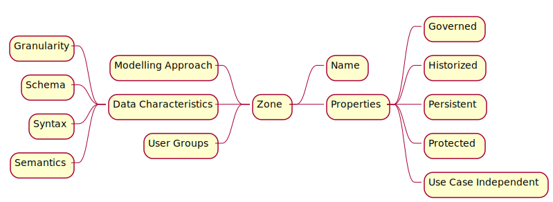

Data Reliability Engineering
Summary
Cover Title Summary Dedication Foreword Preface Author Objectives Structure
- I - Concepts
- II - Use Cases
- III - Incorporating Data Reliability Engineering
Epilogue Dictionary References Next Back Cover
Concepts
The first part of this book exposes the different concepts around the data reliability engineering subject. It's intended to be heavilly technical, in contrast with the subsequent parts, intended to explore practical use cases.
Introduction to Systems and Systems Reliability
These chapters explore what are systems, what is reliability, and how to understand systems reliability, specially its impediments, its attributes, and mechanisms to design and maintain reliable systems. All this for general systems, data systems, and data products.
Data Quality
This chapter explores what is data, what is quality, and what is data quality, to finally explore what is data reliability. The goal is to understand these concepts in all aspects of the data: life cycle, design, modelling, governance, management, access, security, uses, legal frameworks, best practices, maturity, standards, etc.
Processes
This chapter explores, for a given system, the concept of data processes, data and information flow, workflows, orchestration, pipelines, ETL, and ELT.
Operations
This chapter explores the concept of SRE, DataOps, DevOps, Agile methodologies, CI/CD, and other methodologies to assure reliable data operations.
Data Architecture
This chapter explores what is data architecture, including its sources, its storage (Data Lake, Data Warehouses, Data Marts), its application (OLAP servers, processing engines), and its presentation (dashboards, reports).
Introduction to Systems
In the context of data reliability, a system can be defined as a collection of interrelated components working together towards a common goal, often to process, store, and manage data. These components can include hardware, software, databases, procedures, and people, all interacting in a structured way to achieve efficient and reliable data handling.
For people interested in studying data reliability, it's important to understand a system from both a technical and operational perspective. Technically, a system would include the architecture, technology, and protocols that ensure data integrity, availability, and consistency. Operationally, it involves the procedures and practices that maintain the system's performance and reliability over time.
In essence, when talking about data reliability, a system can be thought of as the entire ecosystem that supports the lifecycle of data, from its creation and storage to its retrieval and usage. This includes considerations of redundancy, fault tolerance, backup procedures, security measures, and regular maintenance practices, all of which contribute to the system's overall reliability and the trustworthiness of the service it provides.
Systems Reliability
The reliability of a system is the property that allows the system's service to be justifiably qualified as reliable.
The goal of this chapter is to introduce the concepts of reliability and safety explored by Alan Burns and Andy Wellings in their book "Real-Time Systems and Programming Languages", concepts developed by different industries mainly between the 60s and 90s, and the concepts of Site Reliability Engineering (SRE) developed from the 2000s onwards, in addition to complementing it with reliability concepts worked on in other engineering fields (mechanical, industrial, etc.), as well as contextualizing it with concepts currently worked on in the software and computer systems industry.
This chapter is divided in three parts, each exploring one of these concepts:
Impediments prevent a system from functioning perfectly, or are a consequence of it. This subsection will address the detection of different types of impediments, which include Failures, Errors, and Defects.
The way and measures by which the quality of a reliable service can be estimated.
The mechanisms through which system reliability is addressed, whether by internalization and adoption of best practices, or by the application of specific methodologies, architectures, or tools. This subsection aims to create a framework that engineers can adopt for system reliability from the design phase itself.
Impediments
Failures, Errors, and Faults
Failures are the result of unexpected internal problems that a system eventually exhibits in its external behavior. These problems are called errors, and their mechanical or algorithmic causes are referred to as faults. When a system's behavior deviates from what is specified for it, it is said to have a failure, or the system have failed.
Systems are composed of components, each of which can be considered a system in itself. Thus, a failure in one system can induce a fault in another, which may result in an error and a potential failure of this system. This can continue and produce an effect on any related system, and so on.
A faulty component of a system is one that will produce an error under a specific set of circumstances during the system's lifetime. Seen in terms of state transitions, a system can be considered as a number of external and internal states.
An external state not specified in the system's behavior will be considered a system failure. The system itself consists of a number of components (each with its own states), all contributing to the system's external behavior. The combination of these components' states is called the system's internal state. An unspecified internal state is considered an error, and the component that produced the illegal state transition is said to be faulty.
The three types of failures:
- Transient failures: begin at a specific point in time, remain in the system for some period, and then disappear.
- Permanent failures: begin at a certain point and remain in the system until they are repaired.
- Intermittent failures: are transient failures that occur sporadically.
Failure Modes
A system can fail in many ways. A designer may design the system assuming a finite number of failure modes, however, the system may fail in ways that were not anticipated.
We can classify the failure modes of the services that a system provides, which are:
- Value failures: the value associated with the service is incorrect.
- Timing failure: the service is completed at the wrong time.
- Arbitrary failure: a combination of value and timing failures.
Value failure modes are called value domain, and are classified into boundary error, and wrong value, where the value is outside the stipulated range.
Failures in the time domain can cause the service to be delivered:
- Too early (premature): the service is delivered before it is required.
- Too late (delayed or performance error): the service is delivered after it is required.
- Infinitely late (omission failure): the service is never delivered.
- Unexpected (commission failure or improvisation): the service is delivered without being expected.
In general, we can assume the modes in which a system can fail:
- Uncontrolled failure: a system that produces arbitrary errors, both in the value domain and in the time domain (including improvisation errors).
- Delay failure: a system that produces correct services in the value domain but suffers from timing delays.
- Silent failure: a system that produces correct services in both the value and time domains, until it fails. The only possible failure is omission, and when it occurs, all subsequent services will also suffer from omission failures.
- Crash failure: a system that has all the properties of a silent failure but allows other systems to detect that it has entered the state of silent failure.
- Controlled failure: a system that fails in a specified and controlled manner.
- Failure-free: a system that always produces the correct services.
Attributes
Reliability
It is the probability R(t) that the system will continue functioning at the end of the process.
The time t is measured in continuous working hours between diagnostics. The constant failure rate λ is measured in failures/hour. The useful life of a system component is the constant region (on a logarithmic scale) of the curve between the component's age and its failure rate. The region of the graph before equilibrium is the Burn-In Phase, and the region where the failure rate starts to increase is the End of Life Phase. Thus, we have R(t) = exp(-λt).
Availability
It is the measure of the frequency of incorrect service periods.
Dependability
Continuity of service delivery.
It is a measure (probability) of the success with which the system conforms to the definitive specification of its behavior.
Safety
It is the absence of conditions that can cause damage and the propagation of catastrophic damage in production.
However, as this definition can classify virtually any process as unsafe, we often consider the term mishap.
A mishap is an unplanned event or sequence of events that can produce catastrophic damage.
Despite its similarity to the definition of dependability, the difference in emphasis should be noted. Dependability is the measure of success with which the system conforms to the specification of its behavior, typically in terms of probability. Safety, however, is the improbability of conditions leading to a mishap occurring, regardless of whether the intended function is performed.
Integrity
It is the absence of conditions that can lead to inappropriate alterations of data in production. It is the improbability of conditions occurring that alter inappropriate data in production, regardless of whether the intended function is performed.
Maintainability
Ability to undergo repairs and evolve.
Scalability
Ability to adapt to business needs.
Deficiencies
Circumstances that cause or are a product of unreliability.
Mechanisms
Fault Prevention: Avoidance
Fault Tolerance
Fault Prevention: Elimination
Fault Predictions
Reliability Tools
Fault Prevention: Avoidance
There are two phases in fault prevention: avoidance and elimination.
Avoidance aims to limit the introduction of potentially defective data and objects during the execution of the process.
Such as:
- The use of validated and clean information sources, when possible.
- The implementation of data cleaning and validation processes for raw data.
- The validation of table and column availability within databases.
- The introduction of branch operators for effective data management.
- The implementation of rigorous code review processes to maintain a clean and secure codebase.
- The adoption of standardized coding practices and secure coding guidelines to minimize errors and security vulnerabilities.
- The utilization of automated testing frameworks for continuous testing (unit, integration, system) throughout the development cycle.
- The application of configuration management tools and practices to oversee changes in software and hardware, ensuring all modifications are authorized and tested.
- The engagement in detailed requirement analysis and system design reviews to affirm the system's resilience against potential faults, including the use of modeling and simulation tools.
- The incorporation of fail-safe and fail-soft designs to maintain system safety in case of failure, including redundancy strategies for critical components.
Fault Tolerance
Given the limitations in fault prevention, especially as data and processes frequently change, it becomes necessary to resort to fault tolerance.
There are different levels of fault tolerance:
- Full tolerance: there is no management of adverse or unwanted conditions; the process does not adapt to validations and environmental variables or other external information for the execution of tasks.
- Controlled degradation (or graceful degradation): notifications are triggered in the presence of faults, and if they are significant enough to interrupt the task flow (thresholds, non-existence, or unavailability of data), branch operators will select the subsequent tasks.
- Fail-safe: detected faults are significant enough to determine that the process should not occur; a short-circuit or circuit breaker operator cancels the execution of subsequent tasks, stakeholders are notified, and if there is no automatic process to deal with the problem, the data team can take actions such as rerunning the processes that generate the necessary inputs or escalating the case.
The design of fault-tolerant processes assumes:
- The task algorithms have been correctly designed.
- All possible failure modes of the components are known.
- All possible interactions between the process and its environment have been considered.
Redundancy
All techniques used to achieve fault tolerance are based on adding external elements to the system to detect and recover from faults. These elements are redundant in the sense that they are not necessary for the system's normal operation; this is called protective redundancy. The goal of tolerance is to minimize redundancy while maximizing reliability, always under the constraints of system complexity and size. Care must be taken when designing fault-tolerant systems, as components increase the complexity and maintenance of the entire system, which can in itself lead to less reliable systems.
Redundancy in systems is classified into static and dynamic. Static redundancy, or masking, involves using redundant components to hide the effects of faults. Dynamic redundancy is redundancy within a component that makes it indicate, implicitly or explicitly, that the output is erroneous; recovery must be provided by another component. This fault tolerance technique has four phases:
- Error detection: no fault tolerance action will be taken until an error has been detected.
- Damage confinement and assessment: when an error is detected, the extent of the system that has been corrupted and its scope must be estimated (error diagnosis).
- Error recovery: this is one of the most important aspects of fault tolerance. Error recovery techniques should direct the corrupted system to a state from which it can continue its normal operation (perhaps with functional degradation).
- Failure treatment and service continuation: an error is a symptom of a failure; although the damage might have been repaired, the failure still exists, and therefore the error may recur unless some form of maintenance is performed.
1. Error Detection
The effectiveness of a fault-tolerant system depends on the effectiveness of error detection.
Error detection is classified into:
- Environmental detections: Errors are detected in the environment in which the program runs. They are handled by exceptions.
- Application detection: Errors are detected within the application itself.
- Reverse checks: Applied in components with an isomorphic relationship (one-to-one) between input and output. In this method, the output is taken and the input is calculated, which is compared with the original input value. For real numbers, inexact comparison techniques must be adopted.
- Rationality checks: Based on the design and construction knowledge of the system. They verify that the state of the data or the value of an object is reasonable based on its intended use.
2. Damage Confinement and Assessment
There will always be a time magnitude between the occurrence of a defect and the detection of the error, making it important to assess any damage that may have occurred in this time interval.
Although the type of error detected can provide ideas about the damage to the error handling routine, erroneous information could have been disseminated through the system and its environment. Thus, damage assessment is directly related to the precautions taken by the system designer for damage confinement. Damage confinement refers to structuring the system in such a way as to minimize the damage caused by a faulty component.
There are two main techniques for structuring systems to facilitate damage confinement: modular decomposition and atomic actions. Modular decomposition means that systems should be broken down into components, each represented by one or more modules. The interaction of the components occurs through well-defined interfaces, and the internal details of the modules are hidden and not directly accessible from the outside. This makes it more difficult for an error in one component to indiscriminately pass to another.
Modular decomposition provides the system with a static structure, while atomic actions provide it with a dynamic structure. An action is said to be atomic if there are no interactions between the activity and the system during the course of the action. These actions are used to move the system from one consistent state to another and to restrict the flow of information between components.
3. Error Recovery
Once the error situation has been detected and its possible damages have been assessed, error recovery procedures begin. This phase is probably the most important within fault tolerance techniques, which must transform an erroneous state of the system into another from which the system can continue its normal operation, perhaps with some service degradation.
Here it's worth mentioning two strategies for error recovery: forward recovery and backward recovery. Forward error recovery attempts to continue from the erroneous state by making selective corrections to the system's state, including protecting any aspect of the controlled environment that could be put at risk or damaged by the failure.
Backward recovery is based on restoring the system to a safe state prior to the one in which the error occurred, and then executing an alternative section of the task. This will have the same functionality as the section that produced the defect, but using a different algorithm. It is expected that this alternative will not produce the same defect as the previous version, so it will rely on the designer's knowledge of the possible failure modes of this component.
The designer must be clear about the levels of service degradation, taking into account the services and processes that depend on it. Error recovery is part of the Corrective Action and Preventive Action processes (CAPA), which will be worked on in two moments: in this same chapter on fault tolerance when corrective actions are worked on, and in the next chapter, fault prevention, when preventive actions are addressed.
4. Failure Treatment and Continued Service
An error is a manifestation of a defect, and although the error recovery phase may have brought the system to an error-free state, the error can recur. Therefore, the final phase of fault tolerance is to eradicate the failure from the system so that normal service can continue.
Fault Prevention: Elimination
The second phase of fault prevention is fault elimination. This phase typically involves procedures to find and eliminate the causes of errors. Although techniques such as code reviews (e.g. linters) and local debugging are used, peer reviews and exhaustive testing with various combinations of input states and environments are not always carried out.
QA testing cannot verify that output values are compatible with the business and its applications, so it usually focuses on time-related failure modes (such as timeouts) and defects. Unfortunately, system testing cannot be exhaustive and eliminate all potential faults, mainly due to:
- Tests are used to demonstrate the presence of faults, not their absence.
- The difficulty of performing tests in production. Testing failures in production are akin to live combat, meaning the consequences of errors can directly impact the business, leading to potentially poor decisions (for example, an incorrect calculation of a KPI can not only lead to erroneous actions but can also decrease the business's confidence in the data processes). There are process design alternatives for fault detection in production, which I will discuss later.
- Errors that were introduced during the system requirements stage may not manifest until the system is operational. For example, a DAG (Directed Acyclic Graph) scheduled to run at a time the data source is not yet available or complete. For this specific example, sensors might be used to only continue the execution when the data source is available, or fail if not available within a specific timeframe (timeout).
Failure Prediction
Accurate and rapid prediction of failures allows those of us maintaining processes to ensure higher service availability. Unfortunately, failure prediction is much more complex than detection.
To predict a failure, it must be identified and classified. Failures must also be predictable, meaning there are system (and component) state changes that lead to failure, or the failure occurs regularly following some pattern. Both cases can be translated into time series prediction problems, and sensor and log data can be used to train prediction models.
The collected data will hardly be ready for use by prediction models, so one or more preprocessing tasks must be carried out:
- Data synchronization: metrics collected by various agents must be aligned in time.
- Data cleaning: removal of unnecessary data and generation of missing data (e.g., interpolation).
- Data normalization: metric values are normalized to make magnitudes comparable.
- Feature selection: relevant metrics are identified for use in the models.
Once the data is preprocessed, it will be used in two pipelines: a training pipeline and an inference pipeline. The training pipeline uses bulk data to train the model to be made available to the inference pipeline. The inference results will indicate the presence or absence of specific types of failures in the monitored metric sample.
Reliability Tools
Data Observability Platforms
Data observability platforms provide comprehensive monitoring and observability into data pipelines, data quality, and system performance. These platforms can automatically detect and alert on data anomalies, pipeline failures, and performance bottlenecks, enabling quick resolution and ensuring data reliability.
Version Control Systems for Data
Version control systems designed specifically for data, such as DVC (Data Version Control), enable data engineers to track and manage changes to datasets and machine learning models. This helps in maintaining consistency, reproducibility, and rollback capabilities, enhancing data reliability.
Data Lineage Tools
Data lineage tools track the flow of data through various processes and transformations, providing visibility into the data's origin, what changes were made, and where it's used. This transparency helps in diagnosing and correcting errors, ensuring data reliability and trustworthiness.
Automated Data Quality Testing
Tools like Great Expectations or Deequ allow data engineers to define and automate data quality checks within data pipelines. By continuously testing data for anomalies, inconsistencies, or deviations from defined quality rules, these tools help maintain high data quality standards.
Container Orchestration Systems
Container orchestration systems like Kubernetes can enhance the reliability of data applications and services by managing container deployment, scaling, and failover. This ensures that data services are always available and can dynamically scale based on demand.
Infrastructure as Code (IaC) Tools
IaC tools like Terraform allow data engineers to define and manage infrastructure using code, ensuring that data environments are reproducible, consistent, and maintainable. This reduces the risk of environment-related inconsistencies and errors.
Feature Flags and Toggle Management
Feature flags and toggle management tools enable data engineers to roll out new features and changes in a controlled manner. By gradually introducing changes and monitoring their impact, engineers can ensure system stability and quickly revert changes if issues arise.
Chaos Engineering Tools
Chaos engineering tools, such as Gremlin or Chaos Mesh, introduce controlled disruptions into data systems (like network latency, server failures, or resource exhaustion) to test and improve their resilience. By proactively identifying and addressing potential points of failure, data systems become more robust and reliable.
Workflow Orchestration Tools
Workflow orchestration tools like Apache Airflow or Prefect help manage complex data pipelines by ensuring tasks are executed in the correct order, managing dependencies, and handling retries and failures gracefully. This improves the reliability of data processing workflows.
Apache Airflow
In the context of this chapter on ensuring data reliability, Apache Airflow can be classified as a Workflow Orchestration Tool. Airflow is designed to author, schedule, and monitor workflows programmatically. It enables data engineers to define, execute, and manage complex data pipelines, ensuring that data tasks are executed in the correct order, adhering to dependencies and handling retries and failures gracefully. By providing robust scheduling and monitoring capabilities for data workflows, Airflow plays a pivotal role in maintaining the reliability and consistency of data processing operations.
Apache Airflow contributes significantly to data reliability through its robust workflow orchestration capabilities. Here's how Airflow enhances the reliability of data processes:
Scheduled and Automated Workflows
Airflow allows for the scheduling of complex data workflows, ensuring that data processing tasks are executed at the right time and in the right order. This automation reduces the risk of human error and ensures that critical data processes, such as ETL jobs, data validation, and reporting, are run consistently and reliably.
Dependency Management
Airflow's ability to define dependencies between tasks means that data workflows are executed in a manner that respects the logical sequence of data processing steps. This ensures that upstream failures are appropriately handled before proceeding with downstream tasks, maintaining the integrity and reliability of the data pipeline.
Retries and Failure Handling
Airflow provides built-in mechanisms for retrying failed tasks and alerting when issues occur. This resilience in the face of failures helps to ensure that temporary issues, such as network outages or transient system failures, do not lead to incomplete or incorrect data processing, thereby enhancing data reliability.
Extensive Monitoring and Logging
With Airflow's comprehensive monitoring and logging capabilities, data engineers can quickly identify and diagnose issues within their data pipelines. This visibility is crucial for maintaining high data quality and reliability, as it allows for prompt intervention and resolution of issues that could compromise data integrity.
Dynamic Pipeline Generation
Airflow supports dynamic pipeline generation, allowing for workflows that adapt to changing data or business requirements. This flexibility ensures that data processes remain relevant and reliable, even as the underlying data or the processing needs evolve.
Scalability
Airflow's architecture supports scaling up to handle large volumes of data and complex workflows. This scalability ensures that as data volumes grow, the data processing pipelines can continue to operate efficiently and reliably without degradation in performance.
By orchestrating data workflows with these capabilities, Airflow plays a critical role in ensuring that data processes are reliable, efficient, and aligned with business needs, making it an essential tool in the data engineer's toolkit for maintaining data reliability.
dbt
In the context of this chapter, which discusses various tools and methodologies for ensuring data reliability, dbt (data build tool) can be classified as a Data Transformation and Testing Tool. It specializes in managing, testing, and documenting data transformations within modern data warehouses. dbt enables data engineers and analysts to write scalable, maintainable SQL code for transforming raw data into structured and reliable datasets suitable for analysis, thereby playing a crucial role in maintaining and enhancing data reliability.
It plays a significant role in enhancing data reliability within modern data engineering practices. It is a command-line tool that enables data analysts and engineers to transform data in their warehouses more effectively by writing, testing, and deploying SQL queries. Here’s how dbt contributes to data reliability:
Version Control and Collaboration
dbt encourages the use of version control systems like Git for managing transformation scripts, which enhances collaboration among team members and maintains a historical record of changes. This practice ensures consistency and reliability in data transformations, as changes are tracked, reviewed, and documented.
Testing and Validation
dbt allows for the implementation of data tests that automatically validate the quality and integrity of the transformed data. These tests can include not-null checks, uniqueness tests, referential integrity checks among tables, and custom business logic validations. By catching issues early in the data transformation stage, dbt helps prevent the propagation of errors downstream, thereby improving the reliability of data used for reporting and analytics.
Data Documentation
With dbt, data documentation is treated as a first-class citizen. dbt generates documentation for the data models, including descriptions of tables and columns and the relationships between different models. This documentation is crucial for understanding the data transformations and ensuring that all stakeholders have a clear and accurate view of the data, its sources, and transformations, which is essential for data reliability.
Data Lineage
dbt provides a visual representation of data lineage, showing how different data models are connected and how data flows through the transformations. This visibility into data lineage helps in understanding the impact of changes, troubleshooting issues, and ensuring that data transformations are reliable and maintain the integrity of the data throughout the pipeline.
Incremental Processing
dbt supports incremental data processing, which allows for more efficient data transformations by only processing new or changed data since the last run. This approach reduces the likelihood of processing errors due to handling smaller volumes of data at a time and ensures that the data remains up-to-date and reliable.
Modular and Reusable Code
dbt promotes writing modular and reusable SQL code, which reduces redundancy and potential for errors in data transformation scripts. By using macros and packages, common logic can be standardized and reused across projects, increasing the reliability of data transformations.
By integrating these features and best practices into the data transformation process, dbt helps ensure that the data is accurate, consistent, and reliable, which is crucial for making informed business decisions and maintaining trust in data systems.
Reliability Block Diagrams
Reliability Block Diagrams (RBD) are a method for diagramming and identifying how the reliability of components (or subsystems) R(t) contributes to the success or failure of a redundancy. It is a method that can be used to design and optimize components and select redundancies, aiming to lower failure rates.
An RBD is represented as a series of connected blocks (in series, parallel, or a combination thereof), indicating redundant components, the type of redundancy, and their respective failure rates.
When analyzing the diagram, components that failed and those that did not fail are indicated. If a path can be found between the start and end of the process with components that did not fail, it can be assumed that the process can be completed.
Each RBD should include statements listing all relationships between components, i.e., what conditions led to the use of one component over another in the process execution.
RBDs can be particularly useful in data engineering to ensure the reliability and availability of data pipelines and storage systems. Here's how RBDs could be applied in the context of data engineering:
Designing Data Pipelines
Data pipelines consist of various stages like data collection, processing, transformation, and loading (ETL processes). An RBD can represent each stage as a block, with connections illustrating the flow of data. This helps in identifying critical components whose failure could disrupt the entire pipeline, allowing engineers to implement redundancy or failovers specifically for those components.
Infrastructure Reliability
In data engineering, the infrastructure includes databases, servers, network components, and storage systems. An RBD can help visualize the relationship between these components and their impact on overall system reliability. For example, a database cluster might be set up with redundancy to ensure that the failure of a single node doesn't result in data loss or downtime, represented in an RBD by parallel blocks for each redundant component.
Dependency Analysis
RBDs can help data engineers understand how different data sources and processes depend on each other. For instance, if a data pipeline relies on multiple external APIs or data sources, the RBD can illustrate these dependencies, highlighting potential points of failure if one of the external sources becomes unreliable.
Optimizing Redundancies
By using RBDs, data engineers can identify areas where redundancies are necessary to maintain data availability and system performance. This is crucial for critical systems where data must be available at all times. For example, in a data replication strategy, the RBD can help determine the number of replicas needed to achieve the desired level of reliability.
Failure Mode Analysis
RBDs allow for the identification of single points of failure within the system. Understanding how individual components contribute to the overall system reliability enables data engineers to prioritize efforts in mitigating risks, such as adding backups, introducing data validation steps, or improving error handling mechanisms.
Scalability and Maintenance Planning
As data systems scale, RBDs can be updated to reflect new components and dependencies, helping engineers plan for maintenance and scalability while minimizing the impact on reliability. This foresight ensures that the system can grow without compromising on performance or data integrity.
In summary, Reliability Block Diagrams offer a systematic approach for data engineers to design, analyze, and optimize data systems for reliability. By visualizing component dependencies and identifying critical points of failure, RBDs facilitate informed decision-making to enhance system robustness and ensure continuous data availability.
Failure Reporting, Analysis, and Corrective Action System (FRACAS)
FRACAS is a defined system or process for reporting, classifying, and analyzing failures, as well as planning corrective actions for such failures. It is part of the process to keep a history of analyses and actions taken.
Implementing this process involves automating the analysis of data process logs, commits, pull requests, and tickets.
The FRACAS process is cyclical and follows the adapted FRACAS Kaizen Loop:
- Failure Mode Analysis: Analysis of failure modes.
- Failure Codes Creation: Creation of failure codes or the methodology for classifying them.
- Work Order History Analysis: Analysis of the history of tickets sent to the data team.
- Root Cause Analysis: Analysis of root causes.
- Strategy Adjustment: Strategy adjustment.
Here's how FRACAS could be applied in the context of data engineering:
Failure Reporting
Data engineers and stakeholders report failures or anomalies detected in data processing tasks, data quality issues, or any incidents that affect the expected outcomes of data pipelines. This can be done through automated monitoring tools that alert the team to issues such as failed ETL jobs, discrepancies in data validation checks, or performance bottlenecks.
Analysis
Once a failure is reported, it is analyzed to understand its nature, scope, and impact. This involves digging into logs, reviewing the data processing steps where the failure occurred, and identifying the specific point of failure. The analysis aims to classify the failure (e.g., data corruption, process failure, infrastructure issue) and understand the underlying reasons for the failure.
Corrective Action
Based on the analysis, corrective actions are determined and implemented to fix the immediate issue. This could involve rerunning a failed job with corrected parameters, fixing a bug in the data transformation logic, or updating data validation rules to catch similar issues in the future.
System Improvement
Beyond immediate corrective actions, FRACAS also focuses on systemic improvements to prevent similar failures from occurring. This could involve redesigning parts of the data pipeline for greater resilience, adding additional checks and balances in data validation, improving data quality monitoring, or enhancing the infrastructure for better performance and reliability.
Documentation and Learning
All steps of the FRACAS process, from initial failure reporting to final corrective actions and system improvements, are documented. This documentation serves as a knowledge base for the data engineering team, helping them understand common failure modes, effective corrective actions, and best practices for designing more reliable data systems.
Continuous Improvement
FRACAS is an iterative process. The learnings from each incident are fed back into the data engineering processes, leading to continuous improvement in data pipeline reliability and efficiency. Over time, this reduces the incidence of failures and improves the overall quality and trustworthiness of the data.
By applying FRACAS in data engineering, teams can move from reactive problem-solving to a proactive stance on improving data systems' reliability and efficiency, ultimately supporting better decision-making and operational performance across the organization.
Spare Parts Stocking Strategy
Ideally, clean data sources with complex transformations and cleanings, which save time and processing and can be used in multiple stages of multiple processes, will always be available. However, they may temporarily be unavailable or fail. Once such sources are identified and found to be critical to a system or process, it is prudent to have minimal cleaning and transformation tasks that work on raw data or sources of the source. These may not result in final data with the same level of detail but will be good enough.
These tasks are not designed to be part of the normal process flow but are "spare parts" available for use when maintenance times are too long. The use of such tasks should be for the shortest time possible while the team has time to resolve failures in the original task or design its replacement.
In data engineering, a Spare Parts Stocking Strategy can be metaphorically applied to maintain high availability and reliability of data pipelines and systems. While in traditional contexts, this strategy involves keeping physical spare parts for machinery or equipment, in data engineering, it translates to having backup processes, data sources, and systems in place to ensure continuity in data operations. Here’s how it could be used:
Backup Data Processes
Just as spare parts can replace failed components in machinery, backup data processes can take over when primary data processes fail. For example, if a primary ETL (Extract, Transform, Load) process fails due to an issue with a data source or transformation logic, a backup ETL process can be initiated. This backup process might use a different data source or a simplified transformation logic to ensure that essential data flows continue, albeit possibly at a reduced fidelity or completeness.
Redundant Data Sources
Having alternate data sources is akin to having spare parts for critical components. If a primary data source becomes unavailable (e.g., due to an API outage or data corruption), the data engineering process can switch to a redundant data source to minimize downtime. This ensures that data pipelines are not entirely dependent on a single source and can continue operating even when one source fails.
Pre-Processed Data Reservoirs
Maintaining pre-processed versions of critical datasets can be seen as having spare parts ready to be used immediately. In case of a processing failure in real-time data pipelines, these pre-processed datasets can be quickly utilized to ensure continuity in data availability for reporting, analytics, or other downstream processes.
Simplified or Degraded Processing Modes
In situations where complex data processing cannot be performed due to system failures, having a simplified or degraded mode of operation can serve as a "spare part." This approach involves having predefined, less resource-intensive processes that can provide essential functionality or data outputs until the primary systems are restored.
Automated Failover Mechanisms
Automated systems that can detect failures and switch to backup processes or systems without manual intervention can be seen as having an automated spare parts deployment system. These mechanisms ensure minimal disruption to data services by quickly responding to failures.
Documentation and Testing
Just as spare parts need to be compatible and tested for specific machinery, backup data processes and sources need to be well-documented and regularly tested to ensure they can effectively replace primary processes when needed. Regular drills or simulations of failures can help ensure that the spare processes are ready to be deployed at a moment's notice.
By adopting a Spare Parts Stocking Strategy in data engineering, organizations can enhance the resilience of their data infrastructure, ensuring that data processing and availability are maintained even in the face of system failures or disruptions. This strategy is crucial for businesses where data availability directly impacts decision-making, operations, and customer satisfaction.
Availability Controls
Availability failures can occur for numerous reasons (from hardware to bugs), and some systems or processes are significant enough that availability controls should be implemented to ensure that certain services or data remain available when such failures occur.
Availability controls range from using periodic data backups, snapshots, time travel, redundant processes, backup systems in local or cloud servers, etc.
Availability Controls in data engineering are mechanisms and strategies implemented to ensure that data and data processing capabilities are available when needed, particularly in the face of failures, maintenance, or unexpected demand spikes. These controls are crucial for maintaining the reliability and performance of data systems. Here's how they can be used in data engineering:
Data Backups
Regular data backups are a fundamental availability control. By maintaining copies of critical datasets, data engineers can ensure that data can be restored in the event of corruption, accidental deletion, or data storage failures. Backups can be scheduled at regular intervals and stored in secure, geographically distributed locations to safeguard against site-specific disasters.
Redundant Data Storage
Using redundant data storage solutions, such as RAID configurations in hardware or distributed file systems in cloud environments, can enhance data availability. These systems store copies of data across multiple disks or nodes, ensuring that the failure of a single component does not result in data loss and that data remains accessible even during partial system outages.
High Availability Architectures
Designing data systems with high availability in mind involves deploying critical components in a redundant manner across multiple servers or clusters. This can include setting up active-active or active-passive configurations for databases, ensuring that if one instance fails, another can immediately take over without disrupting data access.
Disaster Recovery Plans
Disaster recovery planning involves defining strategies and procedures for recovering from major incidents, such as natural disasters, cyber-attacks, or significant hardware failures. This includes not only data restoration from backups but also the rapid provisioning of replacement computing resources and network infrastructure.
Load Balancing and Scaling
Load balancers distribute incoming data requests across multiple servers or services, preventing any single point from becoming overwhelmed, which could lead to failures and data unavailability. Similarly, implementing auto-scaling for data processing and storage resources can ensure that the system can handle varying loads, maintaining availability during peak demand periods.
Data Quality Gates
Data quality gates are checkpoints in data pipelines where data is validated against predefined quality criteria. By ensuring that only accurate and complete data moves through the system, these gates help prevent errors and inconsistencies that could lead to processing failures and data unavailability.
Monitoring and Alerting
Continuous monitoring of data systems and pipelines allows for the early detection of issues that could impact availability. Coupled with an alerting system, monitoring ensures that data engineers can quickly respond to and address potential failures, often before they impact end-users.
Versioning and Data Immutability
Implementing data versioning and immutability can prevent data loss and ensure availability in the face of changes or updates. By keeping immutable historical versions of data, systems can revert to previous states if a new data version causes issues.
By employing these Availability Controls, data engineers can create resilient systems that ensure continuous access to data and data processing capabilities, critical for businesses that rely on timely and reliable data for operational decision-making and customer services.
Corrective Actions
Part of the CAPA (Corrective Action and Preventive Action Process), corrective actions (CAP - Corrective Action Process) consist of detecting failures, determining their root causes, corrective actions, and taking preventive measures to prevent the same failure from occurring for the same reasons. The complete definition is found in ISO 9001.
Various tools and techniques are used in different industries for their application, including PDCA (Plan, Do, Check, Act), DMAIC (Define, Measure, Analyse, Improve, Control), 8D, etc. Generally, any tool, technique, or methodology is summarized in ISO 9001 in seven "steps":
- Define the problem.This involves confirming that the problem is real and identifying the Who, What, When, Where, and Why. In the world of data engineering, this step should be as automated as possible, with the failure detected through sensors.
- Define the scope. It involves measuring the problem to be solved, knowing its frequency, which processes or tasks it affects, and which stakeholders are impacted. For data processes, many scope details should already be known information from the design of the processes and tasks, and the frequency can be determined from observability and FRACAS processes.
- Containment actions. These are specific measures adopted for the shortest possible time while working on a definitive solution to the failure. Such measures should already be designed in advance for each task or sub-task. The selection of measures should be automated; if not, they should be implemented immediately.
- Root cause identification. A clear, precise, and comprehensive diagnosis of the failure. Its documentation is part of the FRACAS.
- Corrective action planning. It involves planning corrective actions specifically based on the root cause.
- Implementation of corrective actions. It involves the final implementation of corrective actions in the process, which should automatically be available when similar failures occur.
- Follow-up on results. Documentation, communication, complete FRACAS.
Corrective Actions in data engineering involve identifying, addressing, and mitigating the root causes of identified problems within data processes and systems to prevent their recurrence. This approach is systematic and is crucial for maintaining the integrity, reliability, and efficiency of data operations. Here’s how Corrective Actions can be applied in data engineering:
Identification of Issues
The first step in the Corrective Action process is the accurate identification of issues within data systems. This could range from data quality problems, data pipeline failures, performance bottlenecks, to security vulnerabilities. Automated monitoring tools, data quality frameworks, and alerting systems play a vital role in early detection.
Root Cause Analysis (RCA)
Once an issue is identified, a thorough Root Cause Analysis is conducted to understand the underlying cause of the problem. Techniques such as the Five Whys, fishbone diagrams, or Pareto analysis can be employed. For instance, if a data pipeline fails frequently due to specific data format inconsistencies, RCA would seek to uncover why these inconsistencies are occurring in the first place.
Planning Corrective Actions
Based on the findings from the RCA, a plan for corrective actions is developed. This plan outlines the steps needed to address the root cause of the problem. In the data pipeline example, if the root cause is found to be incorrect data formatting at the source, a corrective action could involve implementing stricter data validation checks at the data ingestion stage.
Implementation of Corrective Actions
The planned corrective actions are then implemented. This might involve modifying data validation rules, updating ETL scripts, enhancing data quality checks, or even redesigning parts of the data pipeline for better error handling and resilience.
Verification and Monitoring
After the corrective actions are implemented, it’s crucial to verify their effectiveness in resolving the issue and to monitor the system for any unintended consequences. This could involve running test cases, monitoring data pipeline runs for a certain period, or employing data quality dashboards to ensure the issue does not recur.
Documentation and Knowledge Sharing
All steps taken, from issue identification to the implementation of corrective actions and their outcomes, should be thoroughly documented. This documentation serves as a knowledge base for future reference and helps in sharing learnings across the data engineering team and wider organization. It contributes to building a culture of continuous improvement.
Preventive Measures
Beyond addressing the immediate issue, the insights gained during the corrective action process can inform preventive measures to avoid similar issues in the future. This might include revising data handling policies, enhancing training for data engineers, or adopting new tools and technologies for better data management.
In data engineering, Corrective Actions are not just about fixing problems but also about improving processes and systems for long-term reliability and efficiency. By systematically addressing the root causes of issues, data teams can enhance the quality, security, and performance of their data infrastructure, supporting better decision-making and operational outcomes across the organization.
Antifragility
Inspired by Nassim Nicholas Taleb's book Antifragile: Things That Gain from Disorder, antifragility differs from resilience or robustness concepts, where systems seek to maintain their reliability level. Instead, from their design, systems increase their reliability concerning the system's inputs.
Antifragility proposes a system design change, which are commonly designed to be fragile, meaning they will fail if operated outside their requirements. Antifragility suggests the opposite, designing systems that improve when exposed to loads outside of the requirements. In this sense, systems are not only designed to respond to the expected or anticipated but interact with their environment in real-time and adapt to it.
Examples of antifragile systems:
- Self-healing
- Real time sensoring, monitoring
- Live FRACAS
- System Health Management
- Automatic Repair
Methods such as Real-Time Anomaly Detection and Adaptation and Adaptive Load Balancing might interest data teams, but they are not covered in this book. Adaptive Load Balancing, in particular, might be a interesting topic for Data Platform or Data DevOps teams.
Bulkhead Pattern
In the nautical world, we find bulkheads, wooden plates found in ships, designed to prevent the ship from sinking when a portion of the hull is compromised. The Bulkhead Pattern adapts exactly this idea, that a failure in one portion of the system should not compromise the entire system.
This design pattern is commonly applied in software development, consisting of not overloading a service with more calls than it can handle at a given time, an example of this is Netflix's Hystrix system.
In the context of data engineering, the Bulkhead Pattern involves segmenting data processing tasks, resources, and services into isolated units so that a failure in one area does not cascade and disrupt the entire system. Here's how it could be used:
Segmenting Data Pipelines
Data pipelines can be divided into independent segments or modules, each handling a specific part of the data processing workflow. If one segment encounters an issue, such as an unexpected data format or a processing error, it can be addressed or bypassed without halting the entire pipeline. This approach ensures that other data processing activities continue unaffected, maintaining overall system availability and reliability.
Isolating Services and Resources
In a microservices architecture, each data service (e.g., data ingestion, transformation, and storage services) can be isolated, ensuring that issues in one service don't impact others. Similarly, resources like databases and compute instances can be dedicated to specific tasks or services. If one service or resource fails or becomes overloaded, it won't drag down the others, helping maintain the stability of the broader data platform.
Rate Limiting and Throttling
Applying rate limiting to APIs and data ingestion endpoints can prevent any single user or service from consuming too many resources, which could lead to system-wide failures. By throttling the number of requests or the amount of data processed within a given timeframe, the system can remain stable even under high load, protecting against cascading failures.
Implementing Circuit Breakers
Circuit breakers can temporarily halt the flow of data or requests to a service or component when a failure is detected, similar to how a bulkhead would seal off a damaged section of a ship. Once the issue is resolved, or after a certain timeout, the circuit breaker can reset, allowing the normal operation to resume. This prevents repeated failures and gives the system time to recover.
Use of Containers and Virtualization
Deploying data services and applications in containers or virtualized environments can provide natural isolation, acting as bulkheads. If one containerized component fails, it can be restarted or replaced without affecting others, ensuring that the overall system remains operational.
By employing the Bulkhead Pattern in data engineering, organizations can build more resilient data systems that are capable of withstanding localized issues without widespread impact, ensuring continuous data processing and availability.
Cold Standby
Cold Standby is a redundancy technique used in data reliability engineering and system design to ensure high availability and continuity of service in the event of system failure. Unlike hot standby or warm standby, where backup systems or components are kept running or at a near-ready state, in cold standby, the backup systems are kept fully offline and are only activated when the primary system fails or during maintenance periods. Here’s a deeper look into cold standby:
- Fully Offline: The standby system is not running during normal operations; it's fully powered down or in a dormant state.
- Manual Activation: Switching to the cold standby system often requires manual intervention to bring the system online, configure it, and start the services.
- Data Synchronization: Data is not continuously synchronized between the primary and cold standby systems. Instead, data is periodically backed up and would need to be restored on the cold standby system upon activation.
- Cost-Effective: Because the standby system is not running, it doesn't incur costs for power or compute resources during normal operations, making it a cost-effective solution for non-critical applications or where downtime can be tolerated for longer periods.
Cold standby systems are typically used in scenarios where high availability is not critically required, or the cost of maintaining a hot or warm standby system cannot be justified. Examples include non-critical batch processing systems, archival systems, or in environments where budget constraints do not allow for more sophisticated redundancy setups.
Implementation considerations:
- Recovery Time: The time to recover services using a cold standby can be significant since the system needs to be powered up, configured, and data may need to be restored from backups. This recovery time should be considered in the system's SLA (Service Level Agreement).
- Regular Testing: Regular drills or tests should be conducted to ensure that the cold standby system can be brought online effectively and within the expected time frame.
- Data Loss Risk: Given that data synchronization is not continuous, there is a risk of data loss for transactions or data changes that occurred after the last backup. This risk needs to be assessed and mitigated through frequent backups or other means.
- Manual Processes: The need for manual intervention to activate cold standby systems requires well-documented procedures and trained personnel to ensure a smooth transition during a failure event.
Cold Standby is a fundamental concept in designing resilient and reliable systems, especially when balancing the need for availability with cost constraints. It provides a basic level of redundancy that can be suitable for certain applications and scenarios in data reliability engineering.
Single Point of Failure (SPOF)
Eliminating Single Point of Failure (SPOF) is a critical strategy in data reliability engineering aimed at enhancing the resilience and availability of data systems. A Single Point of Failure refers to any component, system, or aspect of the infrastructure whose failure would lead to the failure of the entire system. This could be a database, a network component, a server, or even a piece of software that is critical to data processing or storage.
The goal of eliminating SPOFs is to ensure that no single failure can disrupt the entire service or data flow. This is achieved through redundancy, fault tolerance, and careful system design. Here’s how it relates to data reliability:
Redundancy
Introducing redundancy involves duplicating critical components or services so that if one fails, the other can take over without interruption. For example, having multiple data servers, redundant network paths, or replicated databases can prevent downtime caused by the failure of any single component.
Fault Tolerance
Building systems to be fault-tolerant means they can continue operating correctly even if some components fail. This might involve implementing software that can reroute data flows away from failed components or hardware that can automatically switch to backup systems.
Distributed Architectures
Designing systems with distributed architectures can spread out the risk, so no single component's failure can affect the entire system. For example, using cloud services that distribute data and processing across multiple geographical locations can safeguard against regional outages.
Regular Testing
Regularly testing the failover and recovery processes is essential to ensure that redundancy measures work as expected when a real failure occurs. This can include disaster recovery drills and using chaos engineering principles to intentionally introduce failures.
Continuous Monitoring and Alerting
Implementing continuous monitoring and alerting systems helps in the early detection of potential SPOFs before they cause system-wide failures. Monitoring can identify over-utilized resources, impending hardware failures, or software errors that could become SPOFs if not addressed.
By eliminating Single Points of Failure, data engineering teams can create more robust and reliable systems that can withstand individual component failures without significant impact on the overall system performance or data availability. This approach is fundamental to maintaining high levels of service and ensuring that data-driven operations can proceed without interruption.
Data Quality
Data quality refers to how well-suited data is for its intended use, focusing on aspects like accuracy, completeness, and consistency. In data reliability engineering, data quality is crucial because it ensures that the data systems an organization relies on are dependable and can support accurate decision-making and efficient operations.
For those interested in data reliability engineering, understanding data quality is essential. High-quality data leads to reliable systems that businesses can trust for their critical operations and strategic decisions. This chapter will dive into the practical side of maintaining and improving data quality, making it a key skill set for data professionals.
We'll cover important topics like master data management, which helps keep data consistent across the organization, and data governance, ensuring data remains accurate and secure. We'll also look at different data quality models that provide frameworks for assessing and improving data quality. These topics are geared towards giving you actionable insights and tools to enhance the reliability of your data systems.
The goal of this chapter is to bridge the gap between theoretical data quality concepts and their practical application in data reliability engineering, providing actionable insights for improving data systems' robustness and dependability, and to introduce a variety of data quality models, standards, and best practices, enabling data professionals to assess, monitor, and enhance the quality of data within their organizations, thus contributing to overall system reliability.
The topics in this chapter on Data Quality are based on ideas from the book "Calidad de Datos" (Data Quality) by Ismael Caballero Muñoz-Reja and others. The book is published by "Ediciones de la U" and "Ra-Ma". We chose to follow this book's approach to make sure we cover data quality thoroughly and in a way that's useful for Data Reliability Engineering. This way, we're using trusted information from experts to help you understand data quality clearly and systematically.
As a very special note, this chapter mentions a lot the term Data Reliability, which is not the same as Data Reliability Engineering. Data reliability refers to the trustworthiness and dependability of data, while data reliability engineering is the practice of designing, implementing, and maintaining systems and processes to ensure data remains reliable. Both terms were oversimplified here, but both will be explored further along the book.
This chapter is divided in five parts:
This section explains how governance, data management, and data quality management differ and work together, highlighting their importance in aligning with ISO/IEC 38500 standards to meet organizational goals and manage data risks efficiently. We'll also explore the concept of data lifecycle.
Master data is the core information an organization uses across its systems, and master data management is the process of organizing, securing, and maintaining this information to ensure it's accurate and consistent. This section explores entities resolution, master data architecture, maturity models, and standards.
Here we'll explore various frameworks and models that guide how organizations can systematically improve the handling and quality of their data. Including DAMA DMBOK, Aiken's Model, Data Management Maturity Model (DMM), Gartner's Model, Total Quality Data Management (TQDM), Data Management Capability Assessment Model (DCAM), and the Model for Assessing Data Management (MAMD).
Data Quality Models are fundamental frameworks that define, measure, and evaluate the quality of data within an organization. Here we'll explore various criteria, known as dimensions, that help evaluate and enhance the quality of organizational data.
Final Thoughts on Data Quality
This section emphasizes that good data quality, covering aspects like accuracy and completeness, is essential for data reliability and underlies trustworthy business decisions, with a focus on proactive measures to ensure data's integrity during integration, influenced by solid data architecture and metadata management.
Foundations of Data Quality
Data Lifecycle
DAMA
The Data Management Association International (DAMA) provides a comprehensive framework for understanding and managing the data lifecycle within organizations. This lifecycle encompasses all stages through which data passes, from its initial creation or capture to its eventual archiving or deletion. DAMA emphasizes the importance of managing each stage with best practices to ensure the overall quality and reliability of data.
POSMAD Data Flow Model
The POSMAD model, which stands for Plan, Obtain, Store, Maintain, Apply, and Dispose, offers a structured approach to managing the data lifecycle:
-
Plan: Define the objectives and requirements for data collection, including what data is needed, for what purpose, and how it will be managed throughout its lifecycle.
-
Obtain: Acquire data from various sources, ensuring that the data collection methods maintain the integrity and quality of the data.
-
Store: Securely store the data in a manner that maintains its accuracy, accessibility, and compliance with any regulatory requirements.
-
Maintain: Regularly update and cleanse the data to ensure it remains accurate, relevant, and of high quality over time.
-
Apply: Utilize the data in analyses, decision-making processes, or operational workflows, applying it in a way that maximizes its value and utility.
-
Dispose: When data is no longer needed or has reached the end of its useful life, it should be securely archived or destroyed in accordance with data governance policies and regulatory requirements.
Understanding and managing the data lifecycle is crucial for data teams to ensure that the data they work with is accurate, timely, and relevant. Each stage of the POSMAD model presents opportunities to enhance data quality and mitigate risks associated with data mismanagement. For instance, during the "Maintain" stage, data teams can implement quality checks and balances to correct any inaccuracies, ensuring the data's reliability for downstream applications.
The data lifecycle directly influences the design and structure of an organization's data architecture. Data architecture must accommodate the requirements of each lifecycle stage, providing the necessary infrastructure, tools, and processes to support data collection, storage, maintenance, and usage. For example, the "Store" stage necessitates a robust data storage solution that can handle the volume, velocity, and variety of data, while ensuring its accessibility and security.
The management of the data lifecycle, as outlined by DAMA and the POSMAD model, is inherently tied to data reliability. Each stage of the lifecycle offers a checkpoint for ensuring data quality and integrity, which are foundational to data reliability. By adhering to best practices throughout the data lifecycle, data teams can significantly reduce the risk of data errors, inconsistencies, and losses, thereby enhancing the overall reliability of data systems and the insights derived from them.
In summary, a thorough understanding and management of the data lifecycle, from the perspective of DAMA and the POSMAD model, are essential for maintaining data quality and reliability. It ensures that data remains a valuable asset for the organization, supporting informed decision-making and efficient operations.
COBIT
The data lifecycle according to COBIT (Control Objectives for Information and Related Technologies) framework involves a structured approach to managing and governing information and technology in an enterprise. COBIT's perspective on the data lifecycle focuses on governance and management practices that ensure data integrity, security, and availability throughout its lifecycle stages. While COBIT does not explicitly define a "data lifecycle" in the same way as DAMA's POSMAD model, its principles and processes can be applied across various stages of data management to enhance data quality and reliability.
Data Lifecycle Stages in the Context of COBIT:
-
Identification and Classification: In this initial stage, data is identified, classified, and categorized based on its importance, sensitivity, and relevance to the business objectives. COBIT emphasizes the need for clear governance structures and policies to manage data effectively from the outset.
-
Acquisition and Creation: Data acquisition and creation involve collecting data from various sources and generating new data. COBIT recommends implementing strong control measures and practices to ensure the accuracy, completeness, and reliability of the collected and created data.
-
Storage and Organization: Once data is acquired, it needs to be stored securely and organized efficiently. COBIT suggests designing and maintaining data storage solutions that ensure data integrity, confidentiality, and availability, aligning with the enterprise's information security policies.
-
Usage and Processing: Data is then used and processed for various business operations, decision-making, and analytics. COBIT advocates for robust IT processes and controls to manage data access, processing, and usage, ensuring that data is utilized effectively and responsibly within the organization.
-
Maintenance and Quality Assurance: Regular maintenance, including data cleansing, deduplication, and quality checks, is vital to preserve data quality. COBIT stresses continuous improvement and quality assurance practices to ensure that data remains accurate, relevant, and reliable over time.
-
Archiving and Retention: Data that is no longer actively used but needs to be retained for legal, regulatory, or historical reasons is archived. COBIT recommends establishing clear data retention policies and secure archiving solutions that comply with legal and regulatory requirements.
-
Disposal and Destruction: Finally, data that is no longer needed or has surpassed its retention period should be securely disposed of or destroyed. COBIT emphasizes the importance of secure data disposal practices to protect sensitive information and ensure compliance with data protection regulations.
For data teams, applying COBIT's governance and management frameworks to the data lifecycle ensures that data handling practices are aligned with broader enterprise governance objectives, enhancing data security, quality, and reliability. By adopting COBIT's principles, data teams can implement structured, standardized processes for managing data, reducing risks, and ensuring that data remains a reliable asset for informed decision-making.
In summary, COBIT's approach to the data lifecycle underscores the importance of governance, risk management, and compliance practices in every stage of data management. By integrating these practices, organizations can enhance the reliability and value of their data, supporting strategic objectives and operational efficiency.
Governance vs. Data Management vs. Data Quality Management
Understanding the distinctions between governance, data management, and data quality management is crucial for data teams to effectively organize their roles, responsibilities, and processes. Aligning these activities with the ISO/IEC 38500 standards can further ensure that data practices contribute positively to the organization's strategic objectives, manage risks associated with IT and data, and optimize the performance of data and IT resources.
By integrating these frameworks, organizations can create a cohesive and efficient approach to data handling that not only ensures high data quality but also aligns with broader governance goals and compliance requirements, thereby enhancing overall data reliability.
Governance
Data Governance refers to the overarching framework or system of decision rights and accountabilities regarding data and information assets within an organization. It involves setting policies, standards, and principles for data usage, security, and compliance, ensuring that data across the organization is managed as a valuable resource. Governance encompasses the strategies and policies that dictate how data is acquired, stored, accessed, and used, ensuring alignment with business objectives and regulatory requirements.
Data Management
Data Management is the implementation of architectures, policies, practices, and procedures that manage the information lifecycle needs of an enterprise. It's more tactical and operational compared to governance and involves the day-to-day activities and technical aspects of handling data, including data architecture, modeling, storage, security, and integration. Data management ensures that data is available, reliable, consistent, and accessible to meet the needs of the organization.
Data Quality Management
Data Quality Management (DQM) is a subset of data management focused specifically on maintaining high-quality data throughout the data lifecycle. It involves the processes, methodologies, and systems used to measure, monitor, and improve the quality of data. DQM covers various dimensions of data quality such as accuracy, completeness, consistency, reliability, and timeliness. It includes activities like data profiling, cleansing, validation, and enrichment to ensure that data meets the quality standards set by the organization.
ISO/IEC 38500 Family
The ISO/IEC 38500 family provides standards for corporate governance of information technology (IT). It offers guidance to those advising, informing, or assisting directors on the effective and acceptable use of IT within the organization. The ISO/IEC 38500 standards are designed to help organizations ensure that their IT investments are aligned with their business objectives, that IT risks are managed appropriately, and that the organization realizes the full potential of its IT resources.
Key Principles of ISO/IEC 38500:
- Responsibility: Everyone in the organization has some responsibility for IT, from top-level executives to end-users.
- Strategy: IT strategy should align with the organization's overall business strategy, supporting its goals and objectives.
- Acquisition: IT acquisitions should be made for valid reasons, with clear and transparent decision-making processes.
- Performance: IT should be used efficiently to deliver value to the organization, with its performance regularly monitored and evaluated.
- Conformance: IT usage should comply with all relevant laws, regulations, and internal policies.
- Human Behavior: IT policies and practices should respect the needs and rights of all stakeholders, including employees, customers, and partners.
Master Data
Master Data refers to the core data within an organization that is essential for its operations and decision-making processes. This data is non-transactional and represents the business's key entities such as customers, products, employees, suppliers, and more. Master data is characterized by its stability and consistency across the organization and is used across various systems, applications, and processes.
Master data is critical because it provides a common point of reference for the organization, ensuring that everyone is working with the same information. Consistency in master data across different business units and systems reduces ambiguity and errors, leading to more accurate analytics, reporting, and business intelligence.
Master Data Management (MDM)
Master Data Management (MDM) is a comprehensive method of defining, managing, and controlling master data entities, processes, policies, and governance to ensure that master data is consistent, accurate, and available throughout the organization. MDM involves the integration, cleansing, enrichment, and maintenance of master data across various systems and platforms within the enterprise.
Key Components of MDM:
- Data Governance: Establishing policies, standards, and procedures for managing master data, including data ownership, data quality standards, and data security.
- Data Stewardship: Assigning responsibility for managing, maintaining, and ensuring the quality of master data to specific roles within the organization.
- Data Integration: Aggregating and consolidating master data from disparate sources to create a single source of truth.
- Data Quality Management: Implementing processes and tools to ensure the accuracy, completeness, consistency, and timeliness of master data.
- Data Enrichment: Enhancing master data with additional attributes or corrections to increase its value to the organization.
Resolving Entities
Resolving entities in the context of Master Data and Master Data Management (MDM) is crucial for ensuring consistency, accuracy, and a single source of truth for core business entities such as customers, products, employees, suppliers, etc. Entity resolution involves identifying, linking, and merging records that refer to the same real-world entities across different systems and datasets.
Here's how entity resolution can be approached:
-
Identification: The first step involves identifying potential matches among entities across different systems or datasets. This can be challenging due to variations in data entry, abbreviations, misspellings, or incomplete records. Techniques Used: Pattern matching, fuzzy matching, and using algorithms that can handle variations and typos.
-
Deduplication: Deduplication involves removing duplicate records of the same entity within a single dataset or system. This step is crucial to prevent redundancy and ensure each entity is represented once. Techniques Used: Hashing, similarity scoring, and machine learning models to recognize duplicates even when data is not identical.
-
Linking: Linking is the process of associating related records across different datasets or systems that refer to the same real-world entity. This step creates a unified view of each entity. Techniques Used: Record linkage techniques, probabilistic matching, and reference matching where a common identifier or set of identifiers is used to link records.
-
Merging: Merging involves consolidating linked records into a single, comprehensive record that provides a complete view of the entity. Decisions must be made about which data elements to retain, merge, or discard. Techniques Used: Survivorship rules that define which attributes to keep (e.g., most recent, most complete, source-specific priorities).
-
Data Enrichment: After resolving and merging entities, data enrichment can be applied to enhance the master records with additional information from external sources, improving the depth and value of the master data. Techniques Used: Integrating third-party data, leveraging public datasets, and using APIs to fetch additional information.
-
Continuous Monitoring and Updating: Entity resolution is not a one-time task. Continuous monitoring and updating are necessary to accommodate new data, changes to existing entities, and evolving relationships among entities. Techniques Used: Implementing feedback loops, periodic reviews, and automated monitoring systems to identify and resolve new or changed entities.
Master Data Architecture
Master Data Architecture refers to the framework and models used to manage and organize an organization's master data, which typically includes core business entities like customers, products, employees, and suppliers. The architecture aims to ensure that master data is consistent, accurate, and available across the enterprise.
Key Components:
- Master Data Hub: A central repository where master data is consolidated, managed, and maintained. It ensures a single source of truth for master data entities across the organization.
- Data Integration Layer: Mechanisms for extracting, transforming, and loading (ETL) data from various source systems into the master data hub. This layer handles data cleansing, deduplication, and standardization.
- Data Governance Framework: Policies, standards, and procedures that govern how master data is collected, maintained, and utilized, ensuring data quality and compliance.
- Data Quality Services: Tools and processes for continuously monitoring and improving the quality of master data, including validation, enrichment, and error correction.
- Application Interfaces: APIs and services that enable other systems and applications within the organization to access and interact with the master data.
4 Variants of Master Data Architecture
Jochen and Weisbecker (2014) proposed four variants of master data architecture to address different organizational needs and data management strategies. Each variant offers a unique approach to handling master data, considering factors like centralization, data governance, and system integration. Here's a summary of each:
- Centralized Master Data Management
- Description: This architecture involves a single, centralized repository where all master data is stored and managed. It serves as the authoritative source for all master data across the organization.
- Advantages: Ensures consistency and uniformity of master data across the enterprise, simplifies governance, and reduces data redundancy.
- Challenges: Requires significant investment in a centralized system, can lead to bottlenecks, and may be less responsive to local or departmental needs.
- Decentralized Master Data Management
- Description: In this variant, master data is managed locally within different departments or business units without a central repository. Each unit maintains its own master data.
- Advantages: Offers flexibility and allows departments to manage data according to their specific needs and processes, enabling quicker responses to local requirements.
- Challenges: Increases the risk of data inconsistencies across the organization, complicates data integration efforts, and makes enterprise-wide data governance more challenging.
- Registry Model
- Description: The registry model uses a centralized registry that stores references (links or keys) to master data but not the master data itself. The actual data remains in local systems.
- Advantages: Provides a unified view of where master data is located across the organization without centralizing the data itself, facilitating data integration and consistency checks.
- Challenges: Does not eliminate data redundancies and may require complex synchronization mechanisms to ensure data consistency across systems.
- Hub and Spoke Model
- Description: This architecture features a central hub where master data is consolidated, synchronized, and distributed to various "spoke" systems throughout the organization.
- Advantages: Balances centralization and decentralization by allowing data to be managed centrally while also supporting local system requirements. It facilitates data sharing and consistency.
- Challenges: Can be complex to implement and maintain, requiring robust integration and data synchronization capabilities between the hub and spoke systems.
Each of these master data architecture variants offers distinct benefits and poses unique challenges, making them suitable for different organizational contexts and data management objectives. The choice among these variants depends on factors such as the organization's size, complexity, data governance maturity, and specific business needs.
Information Architecture Principles
Information Architecture (IA) principles guide the design and organization of information to make it accessible and usable. In the context of master data management, these principles help ensure that master data is effectively organized and can support business needs.
Key Principles:
- Clarity and Understandability: Information should be presented in a clear and understandable manner, with consistent terminology and categorization that aligns with business operations.
- Accessibility: Master data should be easily accessible to authorized users and systems, with appropriate interfaces and query capabilities.
- Scalability: The architecture should be able to accommodate growth in data volume, variety, and usage, ensuring that it can support future business requirements.
- Flexibility: The architecture should be flexible enough to adapt to changes in business processes, data models, and technology landscapes.
- Security and Privacy: Ensuring that master data is protected from unauthorized access and breaches, and that it complies with data protection regulations.
- Integration: The architecture should facilitate the integration of master data with other business processes and systems, ensuring seamless data flow and interoperability.
- Data Quality Focus: A continual emphasis on maintaining and improving the quality of master data through validation, cleansing, and governance practices.
Master Data Management Maturity Models
Master Data Management (MDM) maturity models are frameworks that help organizations assess their current state of MDM practices and identify areas for improvement to achieve more effective management of their master data.
MDM maturity models typically outline a series of stages or levels through which an organization progresses as it improves its master data management capabilities. These models often start with an initial stage characterized by ad-hoc and uncoordinated master data efforts and progress through more sophisticated stages involving standardized processes, integrated systems, and eventually, optimized and business-aligned MDM practices.
The levels in an MDM maturity model might include:
- Initial/Ad-Hoc: Master data is managed in an uncoordinated way, often within siloed departments.
- Repeatable: Some processes are defined, and there might be local consistency within departments, but efforts are not yet standardized across the organization.
- Defined: Organization-wide standards and policies for MDM are established, leading to greater consistency and control.
- Managed: MDM processes are monitored and measured, and data quality is actively managed across the enterprise.
- Optimized: Continuous improvement processes are in place, and MDM is fully aligned with business strategy, driving value and innovation.
Loshin's MDM Maturity Model
David Loshin's MDM maturity model is particularly insightful because it not only outlines stages of maturity but also focuses on the alignment of MDM processes with business objectives, emphasizing the strategic role of master data in driving business success.
Loshin's model includes the following key stages:
- Awareness: The organization recognizes the importance of master data but lacks formal management practices.
- Concept/Definition: Initial efforts to define master data and understand its impact on business processes are undertaken.
- Construction and Integration: Systems and processes are developed for managing master data, with a focus on integrating MDM into existing IT infrastructure.
- Operationalization: MDM processes are put into operation, and the organization starts to see benefits in terms of data consistency and quality.
- Governance: Formal governance structures are established to ensure ongoing data quality, compliance, and alignment with business objectives.
- Optimization: The organization continuously improves its MDM practices, leveraging master data as a strategic asset to drive business innovation and value.
Loshin emphasizes the importance of not just the technical aspects of MDM but also the governance, organizational, and strategic components. The model encourages organizations to progress from merely managing data to leveraging it as a key factor in strategic decision-making and business processes optimization.
ISO 8000
The ISO 8000 standard series is focused on data quality and master data management, providing guidelines and best practices to ensure that data is accurate, complete, and fit for use in various business contexts. This series covers a wide range of topics related to data quality, from terminology and principles to data provenance and master data exchange.
Let's explore some of the key parts of the ISO 8000 series relevant to Master Data and Data Quality:
ISO 8000-100: Data Quality Management Principles
This part of the ISO 8000 series outlines the foundational principles for managing data quality, establishing a framework for assessing, improving, and maintaining the quality of data within an organization.
ISO 8000-102: Data Quality Provenance
Focuses on the provenance of data, detailing how to document the source of data and its lineage. This is crucial for understanding the origins of data, assessing its reliability, and ensuring traceability.
ISO 8000-110: Syntax and Semantic Encoding
Addresses the importance of using standardized syntax and semantics to ensure that data is consistently understood and interpreted across different systems and stakeholders.
ISO 8000-115: Master Data: Exchange of characteristic data
Provides guidelines for the exchange of master data, particularly focusing on the characteristics of products and services. It emphasizes the standardization of data formats to facilitate accurate and efficient data exchange.
ISO 8000-116: Data Quality: Information and Data Quality Vocabulary
Defines a set of terms and definitions related to data and information quality, helping organizations to establish a common understanding of key concepts in data quality management.
ISO 8000-120: Master Data Quality: Prerequisites for data quality
Discusses the prerequisites for achieving high-quality master data, including the establishment of data governance, data quality metrics, and continuous monitoring processes.
ISO 8000-130: Data Quality Management: Process reference model
Introduces a process reference model for data quality management, outlining the key processes involved in establishing, implementing, maintaining, and improving data quality within an organization.
ISO 8000-140: Data Quality Management: Assessment and measurement
Focuses on the assessment and measurement of data quality, providing methodologies for evaluating data quality against defined criteria and metrics.
ISO 8000-150: Master Data Quality: Master data quality assessment framework
Offers a comprehensive framework for assessing the quality of master data, including methodologies for evaluating data against specific quality dimensions such as accuracy, completeness, and consistency.
ISO/IEC 22745
The ISO/IEC 22745 standard, titled "Industrial automation systems and integration — Open technical dictionaries and their application to master data," is a series of international standards developed to facilitate the exchange and understanding of product data. This standard is particularly significant in the context of industrial automation and integration, providing a framework for creating, managing, and deploying open technical dictionaries. These dictionaries ensure that product data is consistent, interoperable, and can be seamlessly exchanged between different systems and organizations, enhancing data quality and reliability across the supply chain.
ISO/IEC 22745 is crucial for organizations involved in manufacturing, supply chain management, and industrial automation because it standardizes the way product and service data is described, categorized, and exchanged. This standardization supports more efficient procurement processes, reduces the risk of misinterpretation of product data, and enhances interoperability between different IT systems and platforms. By implementing ISO/IEC 22745, organizations can improve the accuracy and reliability of their master data, leading to better decision-making and operational efficiencies.
Part 1: Overview and Fundamental Principles
Provides a general introduction to the standard, outlining its scope, objectives, and fundamental principles. It sets the foundation for the development and use of open technical dictionaries.
Part 2: Vocabulary
Establishes the terms and definitions used throughout the ISO/IEC 22745 series, ensuring a common understanding of key concepts related to open technical dictionaries and master data exchange.
Part 10: Exchange of characteristic data: Syntax and semantic encoding rules
Specifies the syntax and semantic encoding rules for exchanging characteristic data, ensuring that data exchanged between systems maintains its meaning and integrity.
Part 11: Methodology for the development and validation of open technical dictionaries
Details the methodology for developing and validating open technical dictionaries, including processes for creating, approving, and maintaining dictionary entries.
Part 13: Identification and referencing of requirements of product data
Focuses on the identification and referencing of product data requirements, providing guidelines for documenting and referencing product specifications and standards.
Part 14: Guidelines for the formulation of requests for master data
Provides guidelines for formulating requests for master data, ensuring that data requests are clear, structured, and capable of being fulfilled accurately.
Part 20: Presentation of characteristic data
Addresses the presentation of characteristic data, outlining how data should be formatted and displayed to ensure clarity and usability.
Part 30: Registration and publication of open technical dictionaries
Covers the registration and publication processes for open technical dictionaries, ensuring that dictionaries are accessible, authoritative, and maintained over time.
Part 35: Identification and referencing of terminology
Discusses the identification and referencing of terminology within open technical dictionaries, ensuring consistent use of terms and definitions.
Part 40: Master data repository
Describes the requirements and structure of a master data repository, a centralized system for storing and managing master data in accordance with the principles of ISO/IEC 22745.
MDM Tools Implementation Considerations
There are several MDM tools available, including SAP Master Data Governance (MDG), Informatica MDM, IBM InfoSphere MDM, Microsoft SQL Server Master Data Services (MDS), Oracle MDM, Talend MDM, ECCMA, PILOG, TIBCO MDM, Ataccama MDC, VisionWare Multivue MDM, and many others.
When implementing these master data tools, companies typically go through a series of steps including:
- Assessment: Evaluating the current state of master data, identifying key data domains, and understanding the data lifecycle.
- Strategy Development: Defining objectives, governance structures, and key performance indicators (KPIs) for the MDM initiative.
- Tool Selection: Choosing an MDM tool that aligns with the company's IT infrastructure, data domains, and business objectives.
- Integration: Integrating the MDM tool with existing systems and data sources to ensure seamless data flow and synchronization.
- Data Cleansing and Migration: Cleaning existing data to remove duplicates and inconsistencies before migrating it into the MDM system.
- Governance and Maintenance: Establishing ongoing data governance practices to maintain data quality, including monitoring, auditing, and updating data as needed.
Master data tools are essential for organizations to maintain a "single source of truth" for their critical business entities, enabling more informed decision-making, improved customer experiences, and streamlined operations.
Using a Commercial MDM Tool vs. Building an In-House MDM Service
Deciding between using a commercial Master Data Management (MDM) tool and building an in-house MDM service involves weighing various factors, including cost, scalability, customization, and maintenance. Each approach has its unique set of challenges, advantages, and disadvantages.
Using a Commercial MDM Tool
Pros:
- Speed of Deployment: Commercial MDM tools offer out-of-the-box solutions that can be quickly deployed, allowing organizations to benefit from improved data management in a shorter timeframe.
- Proven Reliability: These tools are developed by experienced vendors, tested across diverse industries and scenarios, ensuring a level of reliability and robustness.
- Support and Updates: Vendors provide ongoing support, regular updates, and enhancements, which helps in keeping the MDM system current with the latest data management trends and technologies.
- Built-in Best Practices: Commercial tools often incorporate industry best practices in data governance, data quality, and data integration, reducing the learning curve and implementation risk.
- Scalability: Most commercial MDM solutions are designed to scale with the growth of the business, accommodating increasing data volumes and complexity without significant rework.
Cons:
- Cost: Licensing fees for commercial MDM tools can be substantial, especially for large enterprises or when scaling up, and there might be additional costs for support and customization.
- Limited Customization: While these tools offer configuration options, there may be limitations to how much they can be tailored to meet unique business requirements.
- Vendor Lock-in: Relying on a vendor's tool can lead to dependency, making it challenging to switch solutions or integrate with non-supported platforms and data sources in the future.
Challenges:
- Navigating complex licensing structures and ensuring the tool fits within the budget constraints.
- Integrating the MDM tool with legacy systems and diverse data sources.
Building an In-House MDM Service
Pros:
- Customization: Building an MDM service in-house allows for complete customization to the specific needs, processes, and data models of the organization.
- Integration: An in-house solution can be designed to integrate seamlessly with existing systems and data sources, providing a more cohesive data ecosystem.
- Control: Organizations maintain full control over the development, maintenance, and evolution of the MDM service, making it easier to adapt to changing business needs.
Cons:
- Resource Intensive: Developing an MDM service requires significant upfront investment in terms of time, skilled personnel, and infrastructure.
- Maintenance and Support: The organization is responsible for ongoing maintenance, updates, and support, which can divert resources from other critical IT functions or business initiatives.
- Risk of Obsolescence: Without continuous investment in keeping the MDM service up-to-date with the latest data management trends and technologies, there's a risk it could become obsolete.
- Longer Time to Value: Designing, developing, and deploying an in-house MDM solution can take considerably longer, delaying the realization of benefits.
Challenges:
- Ensuring the in-house team has the required expertise in data management best practices, technologies, and regulatory compliance.
- Balancing the ongoing resource requirements for development, maintenance, and upgrades of the MDM service.
When creating a Master Data Management (MDM) service, organizations need to consider various architectural options to best meet their business requirements, data governance policies, and technical landscape. These options range from centralized systems to more distributed approaches, each with its advantages and challenges. Here are some common MDM architecture options:
- Centralized MDM Architecture
- Description: A single, central MDM system serves as the authoritative source for all master data across the organization. All applications and systems that require master data integrate with this central repository.
- Pros: Ensures consistency and a single version of the truth for master data; simplifies governance and data quality management.
- Cons: Can create bottlenecks; may be less responsive to local or department-specific needs; single point of failure risk.
- Challenges: Requires significant upfront investment and effort to integrate disparate systems and data sources.
- Decentralized MDM Architecture
- Description: Master data is managed locally within different departments or business units, with no overarching central MDM system. Each unit maintains its own master data according to its specific needs.
- Pros: Offers flexibility; allows departments to manage data according to their unique requirements; can be quicker to implement within individual departments.
- Cons: Risk of data inconsistencies and duplication across the organization; challenges in achieving a unified view of data; more complex data integration efforts.
- Challenges: Coordinating data governance and ensuring data quality across decentralized systems can be complex.
- Registry MDM Architecture
- Description: A centralized registry holds references (links or keys) to master data but not the master data itself. Actual data remains in source systems, and the registry provides a unified view.
- Pros: Reduces data redundancy; easier to implement than a fully centralized model; provides a unified view without moving data.
- Cons: Data quality and consistency must still be managed in each source system; requires robust integration and synchronization mechanisms.
- Challenges: Ensuring real-time synchronization and maintaining the accuracy of links or references in the registry.
- Hub and Spoke MDM Architecture
- Description: Combines elements of centralized and decentralized architectures. A central hub manages core master data, which is then synchronized with "spoke" systems where additional, local master data management may occur.
- Pros: Balances central control with flexibility for local departments; facilitates data sharing and consistency.
- Cons: Complexity in managing and synchronizing data between the hub and spokes; potential for data conflicts between central and local systems.
- Challenges: Designing effective synchronization and conflict resolution mechanisms; managing the scalability of the system.
- Federated MDM Architecture
- **Description: A federated approach integrates multiple MDM systems, each managing master data for specific domains (e.g., customers, products) or regions, without a single central system.
- Pros: Allows specialized management of different data domains; can accommodate different governance models; suitable for large, geographically dispersed organizations.
- Cons: Complex data integration and interoperability challenges; risk of inconsistencies between federated systems.
- Challenges: Ensuring seamless data integration and consistent governance across federated MDM systems.
- Multi-Domain MDM Architecture
- Description: A single MDM system is designed to manage multiple master data domains (e.g., customers, products) within one platform, providing a unified approach to managing diverse data types.
- Pros: Simplifies the IT landscape; reduces integration complexity; offers a consistent approach to data governance and quality across domains.
- Cons: Requires a flexible and scalable MDM solution; may be challenging to meet the specific needs of each data domain within a single system.
- Challenges: Balancing the flexibility needed for different data domains with the desire for a unified MDM platform.
MDM Ownership
Responsibility for Master Data Management (MDM) within an organization can vary significantly depending on the company's size, structure, and how data-driven its operations are. Regardless of company size, it's crucial for MDM responsibilities to involve collaboration between IT departments (who understand the technical aspects of data management and integration) and business units (who understand the data's practical use and business implications). This collaborative approach ensures that MDM efforts are aligned with business objectives and that master data is both technically sound and relevant to business needs.
Small Companies
In smaller companies, MDM responsibilities might fall to a single individual or a small team. This could be the IT Manager, a Data Analyst, or even a Business Manager who has a good understanding of the company's data needs.
A startup with a lean team might have its CTO or a senior developer overseeing MDM as part of their broader responsibilities. They might focus on essential MDM tasks such as defining key data entities and ensuring data quality in critical systems like CRM and ERP.
Medium-sized Companies
As companies grow, they often establish dedicated roles or departments for data management. This might include a Data Manager, MDM Specialist, or a small Data Governance team.
A mid-sized retail company might have an MDM Specialist within the IT department responsible for coordinating master data across various systems like inventory management, customer databases, and supplier information. This role might work closely with department heads to ensure data consistency and quality.
Large Enterprises
In large enterprises, MDM is typically a significant function that involves multiple roles and departments. This can include a Chief Data Officer (CDO) at the strategic level, Data Stewards who oversee data quality and compliance in specific domains, and an MDM team that handles the day-to-day management of master data.
A multinational corporation, for example, might have a CDO responsible for the overall data strategy, including MDM. Under the CDO, there might be Data Stewards for different data domains (e.g., customer data, product data) and a dedicated MDM team that works on integrating, cleansing, and maintaining master data across global systems.
Industry-specific Considerations
- Healthcare: In a hospital or healthcare provider, the responsibility for MDM might fall to a Health Information Manager or a dedicated team within the medical records department, ensuring patient data accuracy across systems.
- Finance: In a bank or financial services firm, MDM might be overseen by a Chief Information Officer (CIO) or a specific data governance committee that ensures compliance with financial regulations and data consistency across customer accounts and transactions.
Master Data and the Data Warehouse
In a data warehouse, master data is often managed through dimension tables. These tables store attributes about the business entities and are used to filter, group, and label data in the warehouse, enabling comprehensive and consistent analytics.
A data warehouse is a centralized repository designed for query and analysis, integrating data from multiple sources into a consistent format. Master data is critical in a data warehouse to ensure consistency across various subject areas like sales, finance, and customer relations. Master data entities like customers, products, and employees provide a unified reference that ensures different data sources are aligned and can be analyzed together effectively.
Master Data and the Data Lake
Master data in a data lake context is used to tag and organize data, making it searchable and useful for specific business purposes. It can help in categorizing and relating different pieces of data within the lake, ensuring that users can find and interpret the data correctly.
A data lake is a more extensive repository that stores structured and unstructured data in its native format. While data lakes offer flexibility in handling vast amounts of diverse data, master data is essential for adding structure and meaning to this data, enabling effective analysis and utilization.
Master Data and Data Marts
Master data ensures that each data mart, whether for marketing, finance, or operations, uses a consistent definition and format for key business entities. This consistency is crucial for comparing and combining data across different parts of the organization.
Data marts are subsets of data warehouses designed to meet the needs of specific business units or departments. Master data is vital for data marts to ensure that the data presented is consistent with the enterprise's overall data strategy and with other departments' data marts.
Data Quality, Data Management, and Data Process Quality
These three pillars form the foundation upon which reliable, actionable insights are built, driving business strategies and operational efficiencies. This chapter delves into the core concepts and frameworks that govern these critical areas, exploring established models and methodologies designed to elevate an organization's data capabilities.
Data Quality: The Bedrock of Trustworthy Data
Data quality encompasses the characteristics that determine the reliability and effectiveness of data, including accuracy, completeness, consistency, timeliness, and relevance. High-quality data is indispensable for accurate analytics, reporting, and business intelligence, directly impacting strategic decisions and operational processes. The pursuit of data quality involves continuous monitoring, cleansing, and validation to ensure data integrity across the data lifecycle.
Data Management: The Framework for Data Excellence
Data management represents the overarching discipline that encompasses all the processes, policies, practices, and architectures involved in managing an organization's data assets. Effective data management ensures that data is accessible, secure, usable, and stored efficiently, facilitating its optimal use across the organization. It covers a wide array of functions, from data governance and data architecture to data security and storage, providing the structure within which data quality initiatives thrive.
Data Process Quality: Ensuring Operational Efficacy
Data process quality focuses on the efficiency, reliability, and effectiveness of the processes that create, manipulate, and utilize data. It involves optimizing data workflows, ensuring that data processing activities like collection, storage, transformation, and analysis are conducted in a manner that upholds data quality and meets business needs. High data process quality minimizes errors, reduces redundancies, and enhances the overall agility and responsiveness of data operations.
The synergy between data quality, data management, and data process quality is undeniable. Robust data management practices provide the foundation for maintaining high data quality, while the quality of data processes ensures that data management and data quality efforts are effectively implemented and sustained. Together, they form a cohesive system that ensures data is a reliable, strategic asset.
This chapter will explore key models and frameworks that guide organizations in enhancing these areas, including:
- DAMA DMBOK: A comprehensive guide to data management best practices.
- Aiken's Model: A framework for assessing and improving data process quality.
- Data Management Maturity Model (DMM): A model for evaluating and enhancing data management practices.
- Gartner's Model: Gartner's insights and methodologies for data management.
- TQDM (Total Quality Data Management): A holistic approach to integrating quality principles into data management.
- DCAM (Data Capability Assessment Model): A framework for assessing data management capabilities and maturity.
- MAMD Model: A model focusing on the maturity assessment of data management disciplines.
DAMA DMBOK
The Data Management Association International (DAMA) Data Management Body of Knowledge (DMBOK) is a comprehensive framework that provides standard industry guidelines and best practices for data management. It serves as a definitive guide for data professionals, outlining the processes, policies, and standards that should be implemented to manage data effectively across an organization. The DMBOK covers a wide range of data management areas, aiming to promote high standards of data quality, integrity, and security.
The DAMA Data Management Framework presents a structured approach to managing an organization's data assets, emphasizing the importance of data as a critical resource for business success. The framework is divided into several knowledge areas, each addressing a specific aspect of data management:
- Data Governance: Establishing the policies, standards, and accountability for data management within an organization.
- Data Architecture: Defining the structure, integration, and alignment of data assets with business goals.
- Data Modeling and Design: Creating data models that ensure data quality and support business processes.
- Data Storage and Operations: Managing the storage, maintenance, and support of data in various forms.
- Data Security: Ensuring the confidentiality, integrity, and availability of data.
- Data Integration and Interoperability: Enabling the seamless sharing and use of data across different systems and platforms.
- Document and Content Management: Managing unstructured data, including documents and multimedia content.
- Reference and Master Data: Managing key business entities and ensuring consistency across the enterprise.
- Data Warehousing and Business Intelligence: Supporting decision-making through the aggregation, analysis, and presentation of data.
- Metadata Management: Managing data about data, ensuring that data assets are easily discoverable and understandable.
- Data Quality Management: Ensuring that data is accurate, complete, and reliable for business purposes.
Some examples on how the framework can be applied accross different industries:
-
Financial Services: Implementing the Data Governance and Data Security aspects of the DAMA DMBOK to ensure compliance with financial regulations (e.g., GDPR, CCPA, SOX). This includes establishing data governance policies, data stewardship roles, and security measures to protect sensitive financial information.
-
Healthcare: Applying the Data Quality Management and Metadata Management components of the framework to ensure the accuracy, completeness, and interoperability of patient data. This involves setting data quality standards, implementing data cleansing processes, and managing metadata to support electronic health records (EHR) systems.
-
Retail and E-commerce: Utilizing the Reference and Master Data, and Data Warehousing and Business Intelligence knowledge areas to manage product information and customer data across multiple channels. This includes standardizing product data, integrating customer data from various touchpoints, and leveraging BI tools for market analysis and personalized marketing.
-
Manufacturing: Leveraging the Data Integration and Interoperability and Data Modeling and Design parts of the DAMA DMBOK to streamline supply chain operations. This can involve creating data models that reflect the supply chain structure and implementing data integration solutions to ensure seamless data flow between suppliers, manufacturers, and distributors.
-
Public Sector: Adopting the Data Architecture and Document and Content Management aspects to manage public records, policy documents, and citizen data. This includes designing a data architecture that supports the accessibility and preservation of public records and implementing content management systems for document storage and retrieval.
-
*Across All Industries: Establishing a cross-functional data governance committee to oversee the implementation of the DAMA DMBOK framework across the organization. This committee would be responsible for defining data policies, setting data quality standards, and coordinating efforts to improve data management practices in line with the framework.
Maturity Model
The DAMA DMBOK also introduces a Maturity Model to help organizations assess their current data management capabilities and identify areas for improvement. The model outlines different levels of maturity, from initial/ad-hoc processes to optimized and managed data management practices. Organizations can use this model to benchmark their data management practices against industry standards, set realistic goals for improvement, and develop a roadmap for advancing their data management capabilities.
The model consists of 6 levels:
Level 0: Non-existent
Data management practices are absent or chaotic. There is no formal recognition of the value of data management, leading to inconsistent, unreliable data handling.
One example is a small startup with no dedicated data management policies or roles, where data is managed ad-hoc by whoever needs it. To advance to the next level of maturity, the company should recognize the value of structured data management and start developing basic data handling policies and procedures.
Level 1: Initial/Ad Hoc
Some data management activities occur, but they are informal and inconsistent. There's a lack of standardized processes, leading to inefficiencies and data quality issues.
One example is a growing business where individual departments manage their data independently, resulting in siloed and inconsistent data practices. To advance to the next maturity level, companies should begin to standardize data management practices across projects or teams and appoint individuals responsible for overseeing data quality and consistency.
Level 2: Repeatable
The organization has developed and applied data management practices that can be repeated across projects or teams. However, these practices may not yet be uniformly enforced or optimized.
One example is a medium-sized enterprise where certain departments have established successful data management routines that are recognized and beginning to be adopted by other parts of the organization. To adance to the next maturity level, companies should formalize data management practices into documented policies and procedures, ensuring consistency across the organization.
Level 3: Defined
Data management processes are documented, standardized, and integrated into daily operations across the organization. There's a clear understanding of roles and responsibilities related to data management.
One example is a large corporation with established data governance frameworks, clear data stewardship roles, and department-wide adherence to data management standards. To advance to the next maturity level, companies should implement metrics to evaluate the effectiveness of data management practices and introduce continuous improvement mechanisms.
Level 4: Managed
The organization monitors and measures compliance with data management standards. There's a focus on continuous improvement based on quantitative performance metrics.
One example is an enterprise with advanced data governance structures, where data management processes are regularly reviewed for efficiency and effectiveness, and improvements are data-driven. To advance to the next maturity level, companies should foster a culture of innovation in data management, experimenting with new technologies and methodologies to enhance data handling and usage.
Level 5: Optimizing
At this level, data management practices are continuously optimized through controlled experimentation and innovation. The organization adapts and evolves its data management capabilities to meet future needs and leverage new opportunities.
One example is a market-leading company that pioneers the use of cutting-edge data technologies and methodologies, setting industry standards for data management and leveraging data as a key competitive advantage. Once in this maturity level, companies should maintain the culture of continuous improvement, staying ahead of industry trends and regularly reassessing and refining data management practices.
Aiken's Model
Aiken's Model for Data Management Maturity provides a structured approach to assessing and improving an organization's data management capabilities
While both Aiken's Model and DAMA's DMBOK aim to enhance data management practices, they differ in scope and focus. DAMA's DMBOK provides a comprehensive framework covering a wide range of data management areas, from governance and architecture to data quality and security. Aiken's Model is more narrowly focused on the maturity progression of data management practices.
DAMA's DMBOK is broader, offering guidelines and best practices across various knowledge areas. Aiken's Model is specifically concerned with assessing and advancing the maturity of data management practices through a structured pathway.
DAMA's DMBOK serves as a reference guide for establishing robust data management practices across the organization. Aiken's Model provides a roadmap for maturing those practices over time, emphasizing continuous improvement.
Levels of Measurement in Aiken's Model
Aiken's Model typically outlines several levels of maturity for data management, from basic, ad-hoc practices to advanced, optimized processes. While the exact levels can vary based on the interpretation of Aiken's principles, a common approach includes:
Initial/Ad-Hoc
Data management is unstructured and reactive, with no formal policies or standards.
To advance to the next level, start by recognizing the importance of structured data management and initiate basic documentation of data processes.
Repeatable
Some data management practices are established and can be repeated across projects, but they are not yet standardized or consistently applied.
To advance to the next level, develop standardized data management policies and ensure they are applied across different teams and projects.
Defined
Data management processes are formally defined, documented, and integrated into regular business operations.
To advance to the next level, implement training programs to ensure all team members understand and adhere to established data management practices.
Managed
The organization regularly measures and evaluates the effectiveness of its data management practices, using metrics to guide improvements.
To advance to the next level, use insights from data management metrics to identify areas for process optimization and implement targeted improvements.
Optimized
Data management practices are continuously refined and enhanced through feedback loops and the adoption of new technologies and best practices.
To maintain this level, foster a culture of innovation within the data management team, encouraging experimentation with new tools and methodologies.
Implementing Aiken's Model
Implementing Aiken's Model involves a step-by-step approach to maturing an organization's data management practices:
- Assessment: Begin with a thorough assessment of current data management practices to identify the current maturity level.
- Goal Setting: Define clear, achievable goals for the next level of maturity, including specific improvements to be made.
- Policy Development: Develop or refine data management policies and standards to support the desired level of maturity.
- Training and Communication: Ensure that all relevant stakeholders are trained on new policies and practices and understand their roles in data management.
- Monitoring and Evaluation: Implement mechanisms to regularly monitor data management practices and measure their effectiveness against defined metrics.
- Continuous Improvement: Use feedback from monitoring and evaluation to continuously improve data management processes.
Let's now use three companies as example: one small tech startup in Initial phase, a medium-sized retail company in Repeatable, and a multinational corporation in Managed phase.
The small company, with a few dozen employees, has data scattered across various platforms (e.g., Google Sheets, Dropbox, a simple database). Data management practices are informal, leading to inefficiencies and data quality issues. They plan to advance by implementing the following steps:
- Assessment: The startup recognizes the need for structured data management to support growth.
- Goal Setting: Aim to reach the "Repeatable" level by establishing basic data management practices, such as centralized data storage and naming conventions.
- Implementation: The startup decides to consolidate data into a cloud-based platform, providing a single source of truth. They document simple, repeatable processes for data entry, update, and backup.
- Advancement: As these practices become embedded in daily operations, the startup plans to standardize data management policies and provide training to all team members.
The medium-sized retail company, with several hundred employees, has basic data management practices in place for customer and inventory data but lacks consistency across departments. Their plan is:
- Assessment: The company evaluates its data management practices and identifies inconsistencies in how customer data is handled across sales, marketing, and customer service departments.
- Goal Setting: Aim to reach the "Defined" level by creating a unified customer data management policy and integrating data systems.
- Implementation: The company develops a comprehensive data management policy, standardizing how customer data is collected, stored, and accessed. They implement a CRM system to centralize customer data and provide training to ensure compliance with the new policy.
- Advancement: With standardized data management practices in place, the company focuses on monitoring compliance and effectiveness, setting the stage for further optimization.
The multinational corporation, with thousands of employees, has well-established data management practices and uses advanced analytics for strategic decision-making. However, they seek to leverage data more innovatively to maintain a competitive edge. Thei plan consists of:
- Assessment: The enterprise conducts a thorough review of its data management practices, looking for opportunities to leverage new technologies and methodologies.
- Goal Setting: Aim to reach the "Optimized" level by incorporating AI and machine learning into data processes for predictive analytics and enhanced decision-making.
- Implementation: The enterprise invests in AI and machine learning tools to analyze large datasets for insights. They initiate pilot projects in strategic business areas, applying advanced analytics to improve product development and customer engagement.
- Advancement: The successful integration of AI and machine learning sets a new standard for data management within the enterprise, driving continuous innovation and optimization of data processes.
SEI's Data Management Maturity Model (DMM)
The DMM model is particularly useful for organizations seeking a structured approach to assessing and improving their data management maturity, with clear categories and maturity levels.
While the SEI's DMM, DAMA DMBOK, and Aiken's Model all aim to improve data management practices, they have different focuses and structures. SEI's DMM offers a comprehensive and structured assessment model focusing on maturity levels across specific categories of data management. It is particularly useful for organizations looking to benchmark their data management capabilities and develop a roadmap for improvement.
The Data Management Maturity (DMM) Model developed by the Software Engineering Institute (SEI) provides a structured framework for assessing and improving an organization's data management practices. The model is organized into six categories, each focusing on a different aspect of data management:
- Data Governance: Focuses on establishing the policies, responsibilities, and processes to ensure effective data management and utilization across the organization. Example: A financial institution implements a data governance committee to oversee data policies, ensuring compliance with financial regulations and internal data standards.
- Data Quality: Focuses on ensuring the accuracy, completeness, and reliability of data throughout its lifecycle. Example: An e-commerce company develops automated data quality checks within its product information management system to ensure product descriptions and pricing are accurate and up-to-date.
- Data Operations: Focuses on managing the day-to-day activities involved in data collection, storage, maintenance, and archiving. Example: A healthcare provider standardizes its patient data entry processes across all clinics to streamline data collection and reduce errors.
- Platform and Architecture: Focuses on establishing the technical infrastructure and architecture to support data management needs. Example: A technology startup adopts cloud-based data storage solutions and microservices architecture to enhance scalability and data integration capabilities.
- Data Management Process: Focuses on defining and optimizing the processes involved in managing data, from creation to retirement. Example: A manufacturing company maps out its entire data flow, from raw material procurement data to production and sales data, optimizing each step for efficiency and accuracy.
- Supporting Processes: Focuses on implementing auxiliary processes that support core data management activities, such as security, privacy, and compliance. Example: An online retailer enhances its data encryption practices and implements stricter access controls to protect customer data and comply with privacy regulations.
DMM Model Maturity Levels
The DMM Model is structured around specific maturity levels that describe an organization's progression in data management capabilities, focusing on measurable improvements across various categories like Data Governance, Data Quality, and Data Operations. The levels typically range from:
- Ad Hoc: Data management practices are unstructured and inconsistent.
- Managed: Basic data management processes are in place but are department-specific.
- Standardized: Organization-wide data management standards and policies are established.
- Quantitatively Managed: Data management processes are measured and controlled.
- Optimizing: Continuous process improvement is embedded in data management practices.
DAMA DMBOK does not explicitly define maturity levels in the same structured manner as the DMM Model. Instead, it provides a comprehensive framework covering various knowledge areas essential for effective data management. Aiken's Model outlines a progression through which organizations can develop their data management practices. The comparative analysis for these models are:
- Structure and Explicitness: The DMM Model provides a structured and explicit set of maturity levels, making it easier for organizations to benchmark their current state. In contrast, DAMA DMBOK focuses more on the breadth of knowledge areas, leaving maturity assessment more implicit. Aiken's Model offers a clear progression but is more focused on the journey of improving data management practices than on defining specific organizational capabilities at each level.
- Focus Areas: The DMM Model and Aiken's Model both emphasize the evolution of data management practices, but the DMM Model is more granular in its assessment across different data management categories. DAMA DMBOK, while not explicitly structured around maturity levels, covers a broader array of data management disciplines, providing a comprehensive framework that organizations can adapt to their maturity assessment processes.
- Application and Goals: Organizations looking for a detailed roadmap to improve their data management capabilities might lean towards the DMM Model or Aiken's Model for their structured approach to maturity. In contrast, those seeking to ensure comprehensive coverage of all data management areas might use DAMA DMBOK as a guiding framework, supplementing it with maturity concepts from the other models.
In practice, organizations might blend elements from each of these frameworks, using DAMA DMBOK's comprehensive knowledge areas as a foundation, Aiken's Model for understanding the staged progression of capabilities, and the DMM Model for specific benchmarks and metrics to gauge and advance their maturity in data management.
Gartner's Model for Enterprise Information Management (EIM)
Gartner's EIM model emphasizes the strategic use of information as an asset to drive business value and competitive advantage.
Gartner's model for Enterprise Information Management (EIM) provides a strategic framework for managing an organization's information assets. Unlike traditional data management models that often focus on the technical aspects of managing data, Gartner's EIM model emphasizes the strategic use of information as an asset to drive business value and competitive advantage. The model integrates data management practices with business strategy, aligning data and information initiatives with broader organizational goals.
Gartner's EIM model distinguishes itself from DAMA's DMBOK and the DMM model by its strong emphasis on aligning information management with business strategy and treating information as a strategic asset. While DAMA's DMBOK provides a comprehensive knowledge framework for data management and the DMM model offers a structured approach to assessing data management maturity, Gartner's EIM model focuses on the strategic integration of information management into business processes and decision-making, aiming to leverage data for competitive advantage.
Gartner's model is more strategic, emphasizing the role of information in achieving business objectives. In contrast, Aiken's model has a more operational focus, concentrating on improving the internal processes and capabilities of data management. Gartner's levels are explicitly aligned with the integration of data management into business strategy, whereas Aiken's stages are more about the maturity and sophistication of data management practices themselves. Gartner's model applies broadly to how an organization manages all its information assets in alignment with business goals, while Aiken's Model is more narrowly focused on the maturity of data management practices.
Maturity Levels in Gartner's EIM Model
Gartner's EIM model outlines several maturity levels, detailing an organization's progression from basic, uncoordinated information management to a mature, optimized, and strategically aligned EIM practice. While Gartner may update its model periodically, a typical progression might include:
- Awareness: The organization recognizes the importance of information management but lacks formal strategies and systems. Information is managed in silos, leading to inefficiencies.
- Reactive: The organization begins to address information management in response to specific problems or regulatory requirements. Efforts are project-based and lack cohesion.
- Proactive: There's a shift towards a more proactive approach to information management. The organization starts to implement standardized policies, tools, and governance structures across departments.
- Service-Oriented: Information management is centralized, and services are provided to the entire organization through a shared-service model. There is a focus on efficiency, quality, and supporting business objectives.
- Strategic: Information is fully integrated into business strategy. The organization leverages information as a strategic asset, driving innovation, customer value, and competitive differentiation.
Metrics for Assessing EIM Maturity
To gauge progress and effectiveness at each maturity level, Gartner suggests using a range of metrics that can include, but are not limited to:
- Data Quality Metrics: Accuracy, completeness, consistency, and timeliness of data.
- Governance Metrics: Compliance rates with data policies, number of data stewards, and governance initiatives in place.
- Usage and Adoption Metrics: The extent of EIM tool adoption across the organization, user satisfaction scores, and the integration of EIM practices into daily operations.
- Business Impact Metrics: The measurable impact of EIM on business outcomes, such as increased revenue, cost savings, improved customer satisfaction, and reduced risk.
Advancing Through the Levels
Progressing from one maturity level to the next in Gartner's EIM model involves:
- Strategic Alignment: Ensuring that information management strategies are aligned with business goals and objectives.
- Governance and Leadership: Establishing strong governance structures and leadership to guide EIM initiatives.
- Technology and Tools: Implementing and integrating the right technologies and tools to support effective information management.
- Culture and Collaboration: Fostering a culture that values information as an asset and promotes collaboration across departments.
- Continuous Improvement: Regularly reviewing and refining EIM practices to adapt to changing business needs and technological advancements.
Total Quality Data Management (TQDM)
Total Quality Data Management (TQDM) is an approach that integrates the principles of Total Quality Management (TQM) into data management practices. TQDM emphasizes continuous improvement, customer (user) satisfaction, and the involvement of all members of an organization in enhancing the quality of data. This approach recognizes data as a critical asset that directly impacts decision-making, operational efficiency, and customer satisfaction.
Compared to traditional data management approaches, TQDM is more holistic and continuous. While traditional data management might focus on specific projects or initiatives to improve data quality, TQDM integrates quality into every aspect of data management, making it an ongoing priority. TQDM's emphasis on user satisfaction, process improvement, and employee involvement also distinguishes it from more technologically focused data management strategies.
Key Principles of TQDM
Customer Focus: Just as TQM focuses on customer satisfaction, TQDM emphasizes meeting or exceeding the data needs of internal and external users. Understanding and addressing the data requirements of business users, customers, and partners is central to TQDM.
Continuous Improvement: TQDM adopts the principle of Kaizen, or continuous improvement, applying it to data processes. It involves regularly assessing and enhancing data collection, storage, management, and analysis processes to improve data quality and utility.
Process-Oriented Approach: Data quality is seen as the result of quality data management processes. TQDM focuses on optimizing these processes to ensure they are efficient, effective, and capable of producing high-quality data.
Employee Involvement: TQDM encourages the involvement of employees across the organization in data quality initiatives. Data quality is seen as a shared responsibility, with training and empowerment provided to employees to contribute to data management efforts.
Fact-Based Decision Making: Decisions within a TQDM framework are made based on data and analysis, emphasizing the importance of accurate, reliable data for strategic and operational decision-making.
Implementing TQDM
Implementing TQDM involves several steps, including:
- Assessing Data Quality Needs: Identifying the critical data elements and understanding the data quality requirements from the perspective of different data users.
- Defining Data Quality Metrics: Establishing clear, measurable indicators of data quality, such as accuracy, completeness, timeliness, and relevance.
- Improving Data Processes: Analyzing and optimizing data-related processes, from data collection and entry to storage, maintenance, and usage, to enhance quality.
- Training and Empowerment: Providing employees with the knowledge and tools they need to contribute to data quality and making them stakeholders in data management.
- Monitoring and Feedback: Establishing systems for ongoing monitoring of data quality and processes, and creating feedback loops for continuous improvement.
Benefits of TQDM
- Improved Data Quality: By focusing on the processes that create and manage data, TQDM helps ensure higher data quality across the organization.
- Enhanced Decision Making: Better data quality leads to more informed decision-making at all levels of the organization.
- Increased User Satisfaction: Addressing the data needs and requirements of users increases satisfaction and trust in the organization's data assets.
- Operational Efficiency: Optimized data processes reduce redundancies and errors, leading to more efficient operations.
Data Management Capability Assessment Model (DCAM)
The Data Management Capability Assessment Model (DCAM) is a comprehensive framework developed by the EDM Council, a global association created to elevate the practice of data management. DCAM provides a structured approach for assessing and improving data management practices, focusing on the capabilities necessary to establish a sustainable data management program. It's designed to help organizations benchmark their data management practices against industry standards and identify areas for improvement.
Compared to models like DAMA DMBOK and TQDM, DCAM provides a more structured approach to assessing data management capabilities, offering a clear maturity model and specific components to guide improvement efforts. While DAMA DMBOK offers a comprehensive knowledge framework for data management, DCAM focuses more on the capability and maturity aspects, providing a benchmarking tool for organizations to measure their progress. TQDM emphasizes quality management principles in data management, whereas DCAM provides a broader assessment model covering all aspects of data management, from governance and quality to technology and analytics.
Components of DCAM
DCAM is structured around several core components, each addressing critical aspects of data management:
- Data Management Strategy: Outlines the overarching approach and objectives for data management within the organization, ensuring alignment with business goals.
- Data Governance: Focuses on the establishment of data governance structures and roles, defining responsibilities and policies for data across the organization.
- Data Quality: Emphasizes the importance of maintaining high data quality through continuous monitoring, measurement, and improvement processes.
- Data Operations: Covers the operational aspects of data management, including data lifecycle management, data security, and data issue resolution.
- Data Architecture and Integration: Addresses the design of data architecture and the integration of data across systems to support accessibility, consistency, and usability.
- Business Process and Data Alignment: Ensures that data management practices are integrated into business processes, supporting operational efficiency and decision-making.
- Data Innovation and Analytics: Encourages the innovative use of data, leveraging analytics and advanced data technologies to drive business value.
- Technology and Infrastructure: Considers the technological foundation required to support effective data management, including data storage, processing, and analytics platforms.
DCAM Maturity Model
The DCAM framework includes a maturity model that helps organizations assess their level of data management capability across the components mentioned above. The model typically defines several maturity levels, from basic to advanced:
- Ad Hoc/Undefined: Data management practices are informal and unstructured, with no clear policies or standards in place.
- Performed/Repeatable: Basic data management practices are being performed, but they may not be consistent or standardized across the organization.
- Defined: Formal data management policies and standards are established and documented, providing a clear framework for data management activities.
- Managed and Measurable: Data management practices are monitored and measured against defined metrics, with active management of data quality and governance.
- Optimized: Continuous improvement processes are in place, with data management practices being regularly refined and optimized based on performance metrics and business needs.
Model for Assessing Data Management (MAMD)
The Model for Assessing Data Management (MAMD) is a conceptual framework designed to evaluate an organization's data management practices and identify areas for improvement. While not as widely recognized as other models like DAMA DMBOK or DCAM, the principles behind an assessment model like MAMD can provide valuable insights into the maturity and effectiveness of data management within an organization.
Compared to DAMA DMBOK and DCAM, a conceptual model like MAMD would similarly offer a structured approach to assessing and improving data management practices. However, the specific focus areas and maturity levels might vary based on the unique aspects of the MAMD framework. While DAMA DMBOK provides a comprehensive knowledge framework and DCAM offers a capability and maturity assessment model, MAMD would combine evaluation and maturity assessment to guide organizations in enhancing their data management practices systematically.
MAMD Evaluation Model
The evaluation model within MAMD typically focuses on various dimensions of data management, such as data quality, data governance, data architecture, and data operations, similar to other frameworks. The evaluation process involves:
- Assessment of Current Practices: Reviewing current data management practices against best practices and standards to identify gaps and areas of non-compliance.
- Stakeholder Engagement: Involving key stakeholders from across the organization to gather insights into data management challenges and needs.
- Data Management Capabilities: Evaluating the organization's capabilities in managing data across different lifecycle stages, from creation and storage to use and disposal.
- Technology and Tools: Assessing the adequacy of the technology and tools in place to support effective data management.
- Compliance and Risk Management: Evaluating how well data management practices align with regulatory requirements and manage data-related risks.
MAMD Maturity Model
Like other data management maturity models, the MAMD maturity model would typically categorize an organization's data management practices into several levels, from initial to optimized stages:
- Initial (Ad-Hoc): Data management is unstructured and reactive, with no formal policies or procedures in place.
- Developing: Some data management processes and policies are being developed, but they may not be consistently applied across the organization.
- Defined: Formal data management policies and procedures are documented and implemented, covering key areas of data management.
- Managed : Data management practices are regularly monitored and reviewed, with performance measured against predefined metrics.
- Optimized: Continuous improvement processes are in place for data management, with practices regularly refined based on performance feedback and evolving business needs.
Conclusion to Data Process Quality Models
Comprehensive Data Governance (DAMA, DCAM)
Models like DAMA DMBOK and DCAM emphasize robust data governance, which is foundational for designing data infrastructures that ensure data quality, security, and compliance. Implementing strong governance frameworks influences how data warehouses, lakes, and marts are structured to enforce policies, standards, and roles effectively.
Maturity and Capability Focus (DMM, MAMD)
The maturity models provided by DMM and conceptual models like MAMD offer a roadmap for organizations to evolve their data management practices. This progression impacts data infrastructure design by encouraging scalable, flexible architectures that can adapt to growing data management sophistication, from basic data warehousing to advanced analytics in data lakes.
Strategic Alignment (Gartner's EIM)
Gartner's focus on integrating data management with business strategy ensures that data infrastructures are designed not just for operational efficiency but also to drive business value. This approach encourages the alignment of data warehouses, lakes, and marts with strategic business objectives, ensuring they support decision-making and innovation.
Quality-Driven Processes (TQDM, Aiken's Model)
The emphasis on continuous quality improvement in TQDM and the operational improvement focus of Aiken's Model impact data infrastructure design by promoting architectures that support ongoing data quality initiatives. This includes incorporating data quality tools and processes into data lakes and warehouses, and designing data marts that provide high-quality, business-specific insights.
User-Centric Design
Across all models, there's an underlying theme of designing data infrastructures that meet the needs of end-users, whether they're business analysts, data scientists, or operational teams. This user-centric approach ensures that data warehouses, lakes, and marts are accessible, understandable, and valuable to all stakeholders, enhancing adoption and driving better business outcomes.
Innovation and Adaptability
Models like DCAM and Gartner's EIM framework encourage organizations to stay abreast of technological advancements and evolving best practices. This influences data infrastructure design to be adaptable and open to integrating new technologies such as cloud storage, real-time analytics, and machine learning capabilities within data lakes and warehouses.
Final Thoughts on Data Process Quality
In conclusion, while each data management model offers distinct methodologies and focuses, collectively, they underscore the importance of strategic, quality-focused, and user-centric approaches to data management. The impact on data infrastructure design is profound, guiding organizations toward building data warehouses, lakes, and marts that are not only efficient and compliant but also agile, scalable, and aligned with business strategies. By adopting principles from these models, organizations can ensure their data infrastructure is well-positioned to support current and future data management needs, driving insights, innovation, and competitive advantage in an increasingly data-driven world.
Data Quality Models
Data Quality Models are fundamental frameworks that define, measure, and evaluate the quality of data within an organization. These models are crucial because they provide a structured approach to identifying and quantifying the various aspects of data quality, which are essential for ensuring that data is accurate, consistent, reliable, and fit for its intended use.
Data Quality Models are particularly important for data teams, data engineers, and data analysts who are responsible for managing the lifecycle of data, from its creation and storage to its processing and analysis. By applying these models, professionals can ensure that the data they work with meets the necessary standards of quality, thereby supporting effective decision-making, optimizing business processes, and enhancing customer satisfaction.
A Data Quality Model is a conceptual framework used to define, understand, and measure the quality of data. It outlines specific criteria and dimensions that are essential for assessing the fitness of data for its intended use. These models serve as a guideline for data teams, including data engineers and data analysts, to systematically evaluate and improve the quality of the data within their systems.
Key Criteria and Dimensions of Data Quality
Data quality can be assessed through various dimensions, each representing a critical aspect of the data's overall quality. While different models may emphasize different dimensions, the following are widely recognized and form the core of most Data Quality Models:
- Accuracy: Refers to the correctness and precision of the data. Data is considered accurate if it correctly represents the real-world values it is intended to model.
- Completeness: Measures whether all the required data is present. Incomplete data can lead to gaps in analysis and decision-making.
- Consistency: Ensures that the data does not contain conflicting or contradictory information across the dataset or between multiple data sources.
- Timeliness: Pertains to the availability of data when it is needed. Timely data is crucial for decision-making processes that rely on up-to-date information.
- Relevance: Assesses whether the data is applicable and helpful for the context in which it is used. Data should meet the needs of its intended purpose.
- Reliability: Focuses on the trustworthiness of the data. Reliable data is sourced from credible sources and maintained through dependable processes.
- Uniqueness: Ensures that entities within the data are represented only once. Duplicate records can skew analysis and lead to inaccurate conclusions.
- Validity: Measures whether the data conforms to the specific syntax (format, type, range) defined by the data model and business rules.
- Accessibility: Data should be easily retrievable and usable by authorized individuals, ensuring that data consumers can access the data when needed.
- Integrity: Refers to the maintenance of data consistency and accuracy over its lifecycle, including relationships within the data that enforce logical rules and constraints.
Applying a Data Quality Model
In practice, data teams apply these dimensions by:
- Setting Benchmarks: Defining acceptable levels or thresholds for each data quality dimension relevant to their business context.
- Data Profiling and Auditing: Using tools and techniques to assess the current state of data against the defined benchmarks.
- Implementing Controls: Establishing processes and controls to maintain data quality, such as validation checks during data entry or automated cleansing routines.
- Continuous Monitoring: Regularly monitoring data quality metrics to identify areas for improvement and to ensure ongoing compliance with quality standards.
Impact on Data Infrastructure
The application of a Data Quality Model has a direct impact on the design and architecture of data infrastructure:
- Data Warehouses and Data Lakes: Ensuring that data stored in these repositories meets quality standards is crucial for reliable reporting and analytics.
- Data Marts: Tailored for specific business functions, the quality of data in data marts directly affects the accuracy and reliability of business insights derived from them.
- ETL Processes: Extract, Transform, Load (ETL) processes must incorporate data quality checks to cleanse, validate, and standardize data as it moves between systems.
Scope
Before delving into the specific dimensions of data quality, it's important to outline the components of the data infrastructure ecosystem that will be under consideration:
- Data Source (Operational Data): This refers to the original sources of data that feed into data lakes, data warehouses, and data marts. It's primarily operational data that originates from business activities and transactions.
- ELTs (Extract, Load, Transform): These are the processes responsible for ingesting Operational Data into the data infrastructure, which could be a database, a data lake, or a data warehouse. Tools like AWS DMS (Database Migration Service), Airbyte, Fivetran, or services connecting to data sources through APIs, ODBC, message queues, etc.
- Data Lake: This component acts as a vast repository for storing a wide array of data types, including Structured, Semi-Structured, and Unstructured data. An example of a data lake is AWS S3 Buckets.
- Data Warehouse: Serving as a centralized repository, a data warehouse enables the analysis of data to support informed decision-making. Some examples include Snowflake, AWS Redshift, and Databricks Data Lakehouse.
- Data Marts: These are focused segments of data warehouses tailored to meet the specific requirements of different business units or departments, facilitating more targeted data analysis.
- ETLs (Extract, Transform, Load): This process is centered around data transformation. Tools such as dbt, pandas, and Informatica are commonly used for this purpose.
Depending on the use case, the presence and significance of these components may vary. Similarly, the dimensions of data quality being assessed might also differ based on the specific requirements and context of each scenario.
Dimensions of Data Quality
Accuracy Dimension in Data Quality
Accuracy is one of the most critical dimensions of data quality, referring to the closeness of data values to the true values they are intended to represent. Ensuring accuracy is fundamental across all stages of the data infrastructure, from data sources through ELTs (Extract, Load, Transform) processes, data lakes, data warehouses, to data marts, and ultimately in reports and dashboards.
To measure accuracy, data teams employ various metrics and techniques, often tailored to the specific type of data and its intended use. Here's how accuracy can be measured throughout the data infrastructure:
Data Sources (Operational Data)
- Metric: Error Rate
- Formula: \( Error \ Rate = \frac{Number\ of \ Incorrect \ Records}{Total \ Number \ of \ Records} \times 100 \)
- Application: Assess the error rate in operational data by comparing recorded data values against verified true values (from trusted sources or manual verification).
ELT Processes
- Metric: Transformation Accuracy Rate
- Formula: \( Transformation \ Accuracy \ Rate = \frac{Number \ of \ Correctly \ Transformed \ Records}{Total \ Number \ of \ Transformed \ Records} \times 100 \)
- Application: Validate the accuracy of data post-transformation by comparing pre- and post-ELT data against expected results based on transformation logic.
Data Lakes and Data Warehouses
- Metric: Data Conformity Rate
- Formula: \( Data \ Conformity \ Rate = \frac{Number \ of \ Records \ Conforming \ to \ Data \ Models}{Total \ Number \ of \ Records} \times 100 \)
- Application: Ensure that data in lakes and warehouses conforms to predefined data models and schemas, indicating accurate structuring and categorization.
Data Marts
- Metric: Attribute Accuracy
- Formula: \( Attribute \ Accuracy = \frac{Number \ of \ Correct \ Attribute \ Values}{Total \ Number \ of \ Attribute \ Values} \times 100 \)
- Application: For each attribute in a data mart, compare the values against a set of true values or rules to assess attribute-level accuracy.
Reports and Dashboards
- Metric: Reporting Accuracy
- Formula: No fixed formula; involves qualitative assessments and cross-validation with known true values or external benchmarks.
- Application: Verify the accuracy of reports and dashboards by cross-referencing with external benchmarks, known datasets, or through manual validation of sample data points.
Ensuring and Improving Accuracy
Ensuring accuracy across the data infrastructure involves several key practices:
- Data Profiling and Cleaning: Regularly profile data at source and post-ELT to identify inaccuracies. Implement data cleaning routines to correct identified inaccuracies.
- Validation Rules: Establish comprehensive validation rules that data must meet before entering the system, ensuring only accurate data is processed and stored.
- Automated Testing and Monitoring: Implement automated testing of data transformations and monitoring of data quality metrics to continuously assess and ensure accuracy.
- Feedback Loops: Create mechanisms for users to report inaccuracies in reports and dashboards, feeding back into data cleaning and improvement processes.
Accuracy Measurement Example
Measuring accuracy in a data infrastructure involves a series of steps and tools that ensure data remains consistent and true to its source throughout its lifecycle. Here's a detailed example incorporating dbt (data build tool), Soda Core, and SQL queries, illustrating how accuracy can be measured from the moment data is loaded into a data lake or warehouse, through transformation processes, and finally when it is ingested into a data mart, in a different process or pipeline, of course. Each pipeline is orchestrated by Apache Airflow.
Pipeline 1: Validating Operational Data Post-Load
-
Scenario: Once AWS DMS (Database Migration Service) or any ELT tool finishes loading operational data into the data lake or data warehouse, immediate validation is crucial to ensure data accuracy.
-
Implementation:
- Soda Core: Use Soda Core to run validation checks on the newly ingested data. Soda Core can be configured to perform checks such as row counts, null value checks, or even more complex validations against known data quality rules.
- SQL Query: Write a SQL query to validate specific data accuracy metrics, such as comparing sums, counts, or specific field values against expected values or historical data.
-
Saving Metrics: Store the results of these validations in a dedicated metrics or audit database, capturing details like the timestamp of the check, the specific checks performed, and the outcomes.
- Sample: 'transactions_yesterday_count' | 1634264 | '2024-02-19T19:12:21.310Z' | 'order_service' | 'orders'
Pipeline 2: Transforming Data with dbt
-
Scenario: Transformations are applied to the ingested data to prepare it for use in data marts, using dbt for data modeling and transformations. After transformations, data is ready to be ingested into data marts for specific business unit analyses.
-
Implementation:
- dbt Tests: Use dbt's built-in testing capabilities to validate the accuracy of transformed data. This can include unique tests, referential integrity tests, or custom SQL tests that assert data accuracy post-transformation.
- dbt Metrics: Define and calculate key data accuracy metrics within dbt, leveraging its ability to capture and model data quality metrics alongside the transformation logic.
- Metric Comparison: Before the final ingestion into data marts, compare the dbt-calculated accuracy metrics with the initially captured metrics in the audit database to ensure that the transformation process has not introduced inaccuracies.
- Automated Alerts: Implement automated alerts to notify data teams if discrepancies exceed predefined thresholds, indicating potential accuracy issues that require investigation. This can be set in Apache Airflow.
Completeness Dimension in Data Quality
Completeness is a crucial dimension of data quality, referring to the extent to which all required data is present within a dataset. It measures the absence of missing values or records in the data and ensures that datasets are fully populated with all necessary information for accurate analysis and decision-making.
To assess completeness, data teams utilize various measures and metrics that quantify the presence of data across different stages of the data infrastructure. Here's how completeness can be evaluated throughout the data ecosystem:
Data Sources (Operational Data)
- Metric: Missing Data Ratio
- Formula: \( Missing \ Data \ Ratio = \frac{Number\ of \ Missing \ Values}{Total \ Number \ of \ Values} \times 100 \)
- Application: Analyze operational data to identify missing values across critical fields. Use SQL queries or data profiling tools to calculate the missing data ratio for key attributes.
ELT Processes
- Metric: Record Completeness Rate
- Formula: \( Record \ Completeness \ Rate = \frac{Number \ of \ Complete \ Records}{Total \ Number \ of \ Records} \times 100 \)
- Application: After ELT processes, validate the completeness of records by checking for the presence of all expected fields. Automated data quality tools or custom scripts can be used to perform this validation.
Data Lakes and Data Warehouses
- Metric: Dataset Completeness
- Formula: No fixed formula; involves assessing the presence of all expected datasets and their completeness.
- Application: Ensure that all expected data is loaded into the data lake or warehouse and that datasets are complete. This can involve cross-referencing dataset inventories or metadata against expected data sources.
Data Marts
- Metric: Attribute Completeness
- Formula: \( Attribute \ Completeness = \frac{Number \ of \ Records \ with \ Non-Missing \ Attribute \ Values}{Total \ Number \ of \ Records} \times 100 \)
- Application: For data marts tailored to specific business functions, assess the completeness of critical attributes that support business analysis. SQL queries or data quality tools can automate this assessment.
Reports and Dashboards
- Metric: Information Completeness
- Formula: Qualitative assessment based on user feedback and data validation checks.
- Application: Ensure that reports and dashboards reflect complete information, with no missing data that could lead to incorrect insights. User feedback and manual validation play a key role in this stage.
Ensuring and Improving Completeness
To maintain high levels of completeness across the data infrastructure, several best practices can be implemented:
- Data Profiling and Auditing: Regularly profile and audit data at each stage of the pipeline to identify and address missing values or records.
- Data Quality Rules: Implement data quality rules that enforce the presence of critical data elements during data entry and processing.
- Data Integration Checks: During ELT processes, include checks to ensure all expected data is extracted and loaded, particularly when integrating data from multiple sources.
- Null Value Handling: Develop strategies for handling null values, such as data imputation or default values, where appropriate, to maintain analytical integrity.
- User Training and Guidelines: Educate data producers on the importance of data completeness and provide clear guidelines for data entry and maintenance.
Consistency Dimension in Data Quality
Consistency in data quality refers to the absence of discrepancy and contradiction in the data across different datasets, systems, or time periods. It ensures that data remains uniform, coherent, and aligned with predefined rules or formats across the entire data infrastructure, minimizing conflicts and errors that can arise from inconsistent data.
To evaluate consistency, data teams apply specific metrics that help identify discrepancies within and across datasets. Here's how consistency can be assessed at various stages of the data infrastructure:
Data Sources (Operational Data)
- Metric: Cross-System Consistency Rate
- Formula: \( Consistency \ Ratio = \frac{Number\ of \ Consistent \ Records \ Across \ Systems}{Total \ Number \ of \ Compared \ Records} \times 100 \)
- Application: Compare key data elements (e.g., customer information, product details) across different operational systems to identify inconsistencies. SQL queries or data comparison tools can facilitate this process.
ELT Processes
- Metric: Transformation Consistency Check
- Formula: No fixed formula; involves verifying that data transformations produce consistent results across different batches or datasets.
- Application: Implement automated checks or tests within ELT pipelines to ensure that loaded data maintains data integrity.
Data Lakes and Data Warehouses
- Metric: Historical Data Consistency
- Formula: \( Historical \ Consistency \ Rate = \frac{Number\ of \ Records \ Matching \ Historical \ Patterns}{Total \ Number \ of \ Records} \times 100 \)
- Application: Analyze time-series data or historical records within the data lake or warehouse to ensure that data remains consistent over time. This may involve trend analysis or anomaly detection techniques.
Data Marts
- Metric: Dimensional Consistency
- Formula: \( Dimensional \ Consistency \ Rate = \frac{Number\ of \ Consistent \ Dimension \ Records}{Total \ Number \ of \ Dimension \ Records} \times 100 \)
- Application: In data marts, assess the consistency of dimension tables (e.g., time dimensions, geographical hierarchies) to ensure they align with business rules and definitions.
Reports and Dashboards
- Metric: Reporting Data Consistency
- Formula: Qualitative assessment based on cross-validation and user feedback.
- Application: Validate that reports and dashboards present consistent information over time and across different data sources. This might involve cross-validation with external benchmarks or authoritative data sources.
Ensuring and Improving Consistency
Strategies to maintain and enhance data consistency across the data infrastructure include:
- Standardization: Develop and enforce data standards and conventions across the organization to ensure consistency in data entry, formatting, and processing.
- Centralized Data Catalogs: Maintain centralized data catalogs or dictionaries that define data elements, their acceptable values, and formats to guide consistent data usage.
- Automated Validation: Incorporate automated validation rules and checks in data pipelines to detect and correct inconsistencies as data moves through ELT processes.
- Master Data Management (MDM): Implement MDM practices to manage key data entities centrally, ensuring consistent reference data across systems.
- Data Reconciliation: Regularly perform data reconciliation exercises to align data across different systems, particularly after significant data migrations or integrations.
Timeliness Dimension in Data Quality
Timeliness refers to the degree to which data is up-to-date and available when required. It's a critical dimension of data quality that ensures data is current and provided within an acceptable timeframe, making it particularly relevant for time-sensitive decisions and operations.
Assessing timeliness involves metrics that quantify the availability and currency of data across the data infrastructure. Here's how timeliness can be evaluated at different stages:
Data Sources (Operational Data)
- Metric: Data Latency
- Formula: \( Data \ Latency = Current \ Time - Data \ Creation \ Time \)
- Application: Measure the time taken for data generated by operational systems to become available for use. Lower latency indicates higher timeliness.
ELT Processes
- Metric: Process Duration
- Formula: \( Process \ Duration = Process \ End \ Time - Process \ Start \ Time \)
- Application: Track the duration of ELT processes to ensure data is processed and made available within expected timeframes. Monitoring tools or logging within ELT pipelines can facilitate this measurement.
Data Lakes and Data Warehouses
- Metric: Refresh Rate
- Formula: \( Refresh \ Rate = \frac{1}{Time \ Between \ Data \ Refreshes} \)
- Application: Assess the frequency at which data in the data lake or warehouse is updated. Higher refresh rates indicate more timely data.
Data Marts
- Metric: Data Availability Delay
- Formula: \( Data \ Availability \ Delay = Data \ Mart \ Availability \ Time - Data \ Warehouse \ Availability \ Time \)
- Application: Measure the time lag between data being updated in the data warehouse and its availability in specific data marts. Shorter delays signify better timeliness. In the case of multiple data sources, consider the time of the last available data.
Reports and Dashboards
- Metric: Report Generation Time
- Formula: \( Report \ Generation \ Time = Report \ Ready \ Time - Report \ Request \ Time \)
- Application: Quantify the time taken for reports and dashboards to be generated and made available to users after a request. Faster generation times enhance timeliness.
Ensuring and Improving Timeliness
To maintain and boost the timeliness of data across the data infrastructure, consider the following strategies:
- Real-Time Data Processing: Implement real-time or near-real-time data processing capabilities to minimize latency and ensure data is promptly available for decision-making.
- Optimize ELT Processes: Regularly review and optimize ELT processes to reduce processing time, employing parallel processing, efficient algorithms, and appropriate hardware resources.
- Incremental Updates: Rather than full refreshes, use incremental data updates where possible to reduce the time taken to update data stores.
- Monitoring and Alerts: Establish monitoring systems to track the timeliness of data processes, with alerts set up to notify relevant teams of any delays or issues.
- Service Level Agreements (SLAs): Define SLAs for data timeliness, clearly outlining expected timeframes for data availability at each stage of the data infrastructure.
Relevance Dimension in Data Quality
Relevance in data quality refers to the extent to which data is applicable and useful for the purposes it is intended for. It ensures that the data collected and maintained aligns with the current needs and objectives of the business, supporting effective decision-making and operational processes.
Assessing the relevance of data involves evaluating how well the data meets the specific requirements and objectives of various stakeholders, including business units, data analysts, and decision-makers. Here's how relevance can be evaluated across different stages of the data infrastructure:
Data Sources (Operational Data)
- Metric: Data Utilization Rate
- Formula: \( Data \ Utilization \ Rate = \frac{Number\ of \ Data \ Elements \ Used \ in \ Decision-Making}{Total \ Number \ of \ Data \ Elements \ Available} \times 100 \)
- Application: Analyze operational data to identify which data elements are actively used in decision-making processes. This can be done through user surveys, data access logs, or analytics on database queries.
Data Lakes and Data Warehouses
- Metric: Data Coverage Ratio
- Formula: \( Data \ Coverage \ Ratio = \frac{Number\ of \ Business \ Questions \ Answerable \ with \ Data}{Total \ Number \ of \ Business \ Questions} \times 100 \)
- Application: Evaluate the extent to which data stored in the data lake or warehouse can answer key business questions. This may involve mapping data elements to specific business use cases or analytics requirements.
Data Marts
- Metric: Business Alignment Index
- Formula: Qualitative assessment based on alignment with departmental objectives and key performance indicators (KPIs).
- Application: In data marts designed for specific business functions, assess how well the data aligns with the department's KPIs and objectives. This could involve regular reviews with department heads and key users to ensure the data remains relevant to their needs.
Reports and Dashboards
- Metric: User Engagement Score
- Formula: \( User \ Engagement \ Score = \frac{Number\ of \ Active \ User \ Interactions \ with \ Reports \ or \ Dashboards}{Total \ Number \ of \ Reports \ or \ Dashboards \ Available} \)
- Application: Monitor user engagement with reports and dashboards to gauge their relevance. High interaction rates may suggest that the information presented is relevant and useful to the users.
Ensuring and Improving Relevance
Strategies to maintain and enhance the relevance of data across the data infrastructure include:
- Regular Needs Assessment: Conduct periodic assessments with data users and stakeholders to understand their evolving data needs and ensure that the data infrastructure aligns with these requirements.
- Agile Data Management: Adopt agile data management practices that allow for the flexible and rapid adaptation of data processes and structures in response to changing business needs.
- Feedback Loops: Implement mechanisms for collecting ongoing feedback from data users on the relevance of data and reports, using this feedback to guide data collection, transformation, and presentation efforts.
- Data Lifecycle Management: Establish policies for data archiving and purging, ensuring that only relevant, current data is actively maintained and available for use, reducing clutter and focusing on valuable data assets.
Reliability Dimension in Data Quality
Reliability in the context of data quality refers to the degree of trustworthiness and dependability of the data, ensuring it consistently produces the same results under similar conditions and over time. Reliable data is crucial for maintaining the integrity of analyses, reports, and business decisions derived from that data.
To evaluate the reliability of data, it's essential to consider various aspects such as source credibility, data collection consistency, and the stability of data values over time. Here's how reliability can be assessed across different stages of the data infrastructure:
Data Sources (Operational Data)
- Metric: Source Credibility Score
- Formula: Qualitative assessment based on the source's historical accuracy, authority, and trustworthiness.
- Application: Evaluate each data source's reliability by considering its track record, reputation, and any third-party certifications or audits. This could involve a review of source documentation and user feedback.
ELT Processes
- Metric: Process Stability Index
- Formula: \( Process \ Stability \ Index = \frac{Number \ of \ Successful \ ELT \ Runs}{Total \ Number \ of \ ELT \ Runs} \times 100 \)
- Application: Monitor the stability and consistency of ELT processes by tracking the success rate of data extraction, loading, and transformation jobs. High stability indicates reliable data processing.
Data Lakes and Data Warehouses
- Metric: Data Variation Coefficient
- Formula: \( Data \ Variation \ Coefficient = \frac{Standard \ Deviation \ of \ Data \ Values}{Mean \ of \ Data \ Values} \)
- Application: Analyze the variation in data values stored in the data lake or warehouse, especially for key metrics, to assess the stability and reliability of the data over time.
Data Marts
- Metric: Data Consensus Ratio
- Formula: \( Data \ Consensus \ Ratio = \frac{Number \ of \ Data \ Points \ in \ Agreement \ with \ Consensus \ Value}{Total \ Number \ of \ Data \ Points} \times 100 \)
- Application: For data marts serving specific business functions, evaluate the consistency of data with established benchmarks or consensus values, ensuring that the data reliably reflects business realities.
Reports and Dashboards
- Metric: User Trust Index
- Formula: Qualitative assessment based on user surveys and feedback regarding their trust in the data presented.
- Application: Gauge the level of trust users have in reports and dashboards by collecting feedback on their experiences and perceptions of data accuracy, consistency, and reliability.
Ensuring and Improving Reliability
Strategies to maintain and enhance data reliability across the data infrastructure include:
- Data Source Validation: Regularly validate and audit data sources to ensure they continue to meet quality and reliability standards.
- Robust Data Processing: Design ELT processes with error handling, logging, and recovery mechanisms to maintain consistency and reliability in data processing.
- Historical Data Tracking: Maintain historical data records and change logs to track data stability and reliability over time, facilitating audits and reliability assessments.
- User Education and Communication: Educate users about the sources, processes, and controls in place to ensure data reliability, building user trust and confidence in the data.
Uniqueness Dimension in Data Quality
Uniqueness is a critical dimension of data quality that ensures each data item or entity is represented only once within a dataset or across integrated systems. It aims to prevent duplicates, which can lead to inaccuracies in analysis, reporting, and decision-making processes. Ensuring uniqueness is particularly important in databases, data warehouses, and customer relationship management (CRM) systems where the integrity of data like customer records, product information, and transaction details is important.
To assess the uniqueness of data, data teams utilize specific metrics that help identify and quantify duplicate entries within their datasets. Here's how uniqueness can be evaluated across different stages of the data infrastructure:
Data Sources (Operational Data)
- Metric: Duplication Rate
- Formula: \( Duplication \ Rate = \frac{Number\ of \ Duplicate \ Records}{Total \ Number \ of \ Records} \times 100 \)
- Application: Analyze operational data for duplicate entries by comparing key identifiers (e.g., customer IDs, product codes) within the source system. SQL queries or data profiling tools can facilitate this process.
Data Lakes and Data Warehouses
- Metric: Entity Uniqueness Score
- Formula: \( Entity \ Uniqueness \ Score = \frac{Number \ of \ Unique \ Entity \ Records}{Total \ Number \ of \ Entity \ Records} \times 100 \)
- Application: In data lakes and warehouses, assess the uniqueness of entities across datasets by comparing key attributes. Data quality tools can automate the identification of duplicates across disparate datasets.
Data Marts
- Metric: Dimensional Key Uniqueness
- Formula: \( Dimensional \ Key \ Uniqueness = \frac{Number \ of \ Unique \ Dimension \ Keys}{Total \ Number \ of \ Dimension \ Records} \times 100 \)
- Application: For data marts, ensure that dimensional keys (e.g., time dimensions, product dimensions) are unique to maintain data integrity and accurate reporting.
Reports and Dashboards
- Metric: Report Data Redundancy Check
- Formula: Qualitative assessment based on user validation and automated data checks.
- Application: Validate that reports and dashboards do not present redundant information, which could mislead decision-making. This involves both user feedback and automated data validation techniques.
Ensuring and Improving Uniqueness
To maintain high levels of uniqueness across the data infrastructure, several best practices can be implemented:
- De-duplication Processes: Establish automated de-duplication routines within ELT processes to identify and resolve duplicates before they enter the data warehouse or data marts.
- Master Data Management (MDM): Implement MDM practices to manage key entities centrally, ensuring a single source of truth and preventing duplicates across systems.
- Key and Index Management: Use primary keys and unique indexes in database design to enforce uniqueness at the data storage level.
- Regular Data Audits: Conduct periodic audits of data to identify and rectify duplication issues, ensuring ongoing data quality.
- User Training and Guidelines: Educate data entry personnel on the importance of data uniqueness and provide clear guidelines for maintaining it during data collection and entry.
Validity Dimension in Data Quality
Validity in data quality refers to the degree to which data conforms to specific syntax (format, type, range) and semantic (meaningful and appropriate content) rules defined by the data model and business requirements. Valid data adheres to predefined formats, standards, and constraints, ensuring that it is both structurally sound and contextually meaningful for its intended use.
Assessing validity involves checking data against established rules and constraints to ensure it meets the required standards for format, type, range, and content. Here's how validity can be evaluated across different stages of the data infrastructure:
Data Sources (Operational Data)
- Metric: Format Conformance Rate
- Formula: \( Format \ Conformance \ Rate = \frac{Number\ of \ Records \ Meeting \ Format \ Specifications}{Total \ Number \ of \ Records} \times 100 \)
- Application: Analyze operational data to ensure that it conforms to expected formats (e.g., date formats, postal codes). This can be done using SQL queries or data profiling tools to check data formats against predefined patterns.
Data Lakes and Data Warehouses
- Metric: Data Type Integrity Score
- Formula: \( Data \ Type \ Integrity \ Rate = \frac{Number \ of \ Records \ with \ Correct \ Data \ Types}{Total \ Number \ of \ Records} \times 100 \)
- Application: In data lakes and warehouses, assess the integrity of data types to ensure that data is stored in the correct format (e.g., numeric fields are stored as numbers). Automated data quality tools can scan datasets to identify type mismatches.
Data Marts
- Metric: Business Rule Compliance Rate
- Formula: \( Business \ Rule \ Compliance \ Rate = \frac{Number \ of \ Records \ Complying \ with \ Business \ Rules}{Total \ Number \ of \ Records} \times 100 \)
- Application: For data marts, ensure that data complies with specific business rules relevant to the department or function. This involves setting up rule-based validation checks that can be run on the data mart contents.
Reports and Dashboards
- Metric: Content Validity Check
- Formula: Qualitative assessment based on user feedback and automated validation checks.
- Application: Ensure that reports and dashboards contain valid data by implementing content validity checks, which might include verifying that displayed data falls within expected ranges or adheres to specific content rules.
Ensuring and Improving Validity
Strategies to maintain and enhance data validity across the data infrastructure include:
- Validation Rules and Constraints: Implement comprehensive validation rules and constraints at the point of data entry and throughout data processing pipelines to ensure data validity.
- Data Quality Tools: Utilize data quality tools that offer automated validation capabilities, allowing for the continuous checking of data against validity rules.
- Data Cleansing: Engage in regular data cleansing activities to correct invalid data, using scripts or data quality platforms to identify and rectify issues.
- Metadata Management: Maintain detailed metadata that specifies the valid format, type, and constraints for each data element, guiding data handling and validation processes.
- User Education and Guidelines: Educate users involved in data entry and management about the importance of data validity and provide clear guidelines and training on maintaining it.
Accessibility Dimension in Data Quality
Accessibility in data quality refers to the ease with which data can be retrieved and used by authorized individuals or systems. It ensures that data is available when needed, through appropriate channels, and in usable formats, while also maintaining necessary security and privacy controls. Accessibility is crucial for efficient decision-making, operational processes, and ensuring that data serves its intended purpose effectively.
Evaluating accessibility involves assessing the systems, protocols, and permissions in place that enable or restrict access to data. Here’s how accessibility can be gauged across different stages of the data infrastructure:
Data Sources (Operational Data)
- Metric: Data Access Success Rate
- Formula: \( Data \ Access \ Success \ Rate = \frac{Number\ of \ Successful \ Data \ Retrieval \ Attempts}{Total \ Number \ of \ Data \ Retrieval \ Attempts} \times 100 \)
- Application: Monitor and log access attempts to operational databases or systems to identify and address any access issues, ensuring that data can be successfully retrieved when needed.
ELT Processes
- Metric: Data Integration Accessibility Score
- Formula: Qualitative assessment based on the integration system's ability to access and pull data from various sources.
- Application: Evaluate the accessibility of data sources by ELT tools and processes, ensuring that there are no barriers to accessing the required data for integration tasks.
Data Lakes and Data Warehouses
- Metric: Query Performance Index
- Formula: \( Query \ Performance \ Index = Average \ Response \ Time \ for \ Data \ Retrieval \ Queries \)
- Application: Measure the performance of data retrieval queries in data lakes and warehouses to assess how quickly and efficiently data can be accessed, considering factors like indexing and query optimization.
Data Marts
- Metric: User Access Rate
- Formula: \( User \ Access \ Rate = \frac{Number \ of \ Unique \ Users \ Accessing \ the \ Data \ Mart}{Total \ Number \ of \ Authorized \ Users} \times 100 \)
- Application: Track the usage of data marts by authorized users to ensure that they can access the data they need for analysis and reporting.
Reports and Dashboards
- Metric: Dashboard Availability Score
- Formula: \( Dashboard \ Availability \ Score = \frac{Time \ Dashboards \ are \ Operational}{Total \ Time} \times 100 \)
- Application: Monitor the availability and uptime of reports and dashboards to ensure that users can access key insights and information without disruptions.
Ensuring and Improving Accessibility
To maintain and enhance data accessibility across the data infrastructure, consider the following strategies:
- Robust Data Architecture: Design data systems and architectures that support efficient data retrieval and query performance, incorporating features like indexing, caching, and data partitioning.
- Access Control Policies: Implement comprehensive access control policies that define who can access what data, ensuring that data is accessible to authorized users while maintaining security and privacy.
- User-Centric Design: Ensure that data repositories, reports, and dashboards are designed with the end-user in mind, focusing on usability, intuitive navigation, and user-friendly interfaces.
- Monitoring and Alerts: Set up monitoring systems to track data system performance and accessibility, with alerts for any issues that might impede access, allowing for prompt resolution.
- Training and Support: Provide training and support to users on how to access and use data systems, tools, and platforms effectively, enhancing their ability to retrieve and utilize data.
Integrity Dimension in Data Quality
Integrity in data quality refers to the consistency, accuracy, and trustworthiness of data across its lifecycle. It involves maintaining data's completeness, coherence, and credibility, ensuring that it remains unaltered from its source through various transformations and usage. Data integrity is crucial for ensuring that the information used for decision-making, reporting, and analysis is reliable and reflects the true state of affairs.
Evaluating data integrity involves assessing the processes, controls, and systems in place to prevent unauthorized data alteration and to ensure data remains consistent and accurate. Here’s how integrity can be assessed across different stages of the data infrastructure:
Data Sources (Operational Data)
- Metric: Source-to-Target Consistency Rate
- Formula: \( Source-to-Target \ Consistency \ Rate = \frac{Number\ of \ Consistent \ Records \ Between \ Source \ and \ Target}{Total \ Number \ of \ Records \ Reviewed} \times 100 \)
- Application: Compare data records in the operational systems (source) with those in the data warehouse or lake (target) to ensure data has been transferred accurately and remains unaltered.
Data Lakes and Data Warehouses
- Metric: Referential Integrity Score
- Formula: \( Referential \ Integrity \ Score = \frac{Number \ of \ Records \ with \ Valid \ References}{Total \ Number \ of \ Records} \times 100 \)
- Application: Validate referential integrity within the data lake or warehouse, ensuring that all foreign key relationships are consistent and that related records are present.
Data Marts
- Metric: Dimensional Integrity Index
- Formula: \( Dimensional \ Integrity \ Index = \frac{Number \ of \ Dimension \ Records \ with \ Consistent \ Attributes}{Total \ Number \ of \ Dimension \ Records} \times 100 \)
- Application: Check the integrity of dimension tables in data marts, ensuring that attributes like time dimensions, geographical hierarchies, or product categories remain consistent and accurate.
Reports and Dashboards
- Metric: Data Traceability Index
- Formula: Qualitative assessment based on the ability to trace data back to its source.
- Application: Ensure that data presented in reports and dashboards can be traced back to its original source or to the transformation logic applied, maintaining a clear lineage for auditability and verification.
Ensuring and Improving Integrity
To maintain and enhance data integrity across the data infrastructure, consider implementing the following strategies:
- Data Validation Rules: Establish validation rules that check data for integrity at every stage of its movement and transformation within the system.
- Audit Trails and Data Lineage: Maintain comprehensive audit trails and clear data lineage documentation, enabling the tracking of data from its source through all transformations to its final form.
- Access Controls and Security Measures: Implement robust access controls and security measures to prevent unauthorized data access or alteration, protecting data integrity.
- Regular Data Audits: Conduct periodic audits of data and data management processes to identify and rectify any integrity issues, ensuring ongoing compliance with data integrity standards.
- Error Handling and Correction Procedures: Develop standardized procedures for handling data errors and anomalies detected during processing, ensuring that integrity issues are promptly and effectively addressed.
Conclusion: Navigating Data Quality Dimensions in Diverse Use Cases
In this chapter, we explored several critical dimensions of data quality, including Accuracy, Completeness, Consistency, Relevance, Reliability, Uniqueness, Validity, Accessibility, and Integrity. Each of these dimensions plays a vital role in ensuring that data serves its intended purpose effectively, supporting decision-making, operational efficiency, and strategic initiatives.
However, it's important to recognize that not every use case will require an exhaustive focus on all these dimensions. The relevance and priority of each dimension can vary significantly depending on factors such as industry norms, organizational size, team composition, and the maturity of the data infrastructure in place. For instance:
-
A financial institution might prioritize Accuracy and Integrity due to the regulatory and fiduciary responsibilities inherent in the industry.
-
A retail business may focus more on Completeness and Relevance to ensure customer data supports effective marketing and sales strategies.
-
A startup with a lean data team might concentrate on Accessibility and Validity to quickly derive value from limited data resources.
Moreover, the metrics presented for measuring each dimension, while broadly applicable, may not be entirely relevant or sufficient for every context. Organizations may find that industry-specific metrics, company-size considerations, team capabilities, or the particularities of their data infrastructure necessitate the development of custom metrics tailored to their unique use cases.
For example:
A large enterprise with a complex data ecosystem might develop sophisticated metrics to measure data lineage and impact analysis, ensuring Integrity and Consistency across multiple systems. A small team within a mid-sized company might adopt more straightforward, manually checked metrics focused on the immediate usability of data, emphasizing Validity and Relevance. Additionally, as data environments evolve and new technologies emerge, new dimensions of data quality may become relevant, and existing dimensions may need to be reinterpreted or expanded. Continuous learning, adaptation, and innovation in data quality practices are essential for organizations to keep pace with these changes.
In conclusion, while the dimensions of data quality outlined in this chapter provide a comprehensive framework for understanding and improving data quality, their application must be adapted to fit the specific needs and constraints of each organization. By carefully selecting which dimensions to focus on and customizing metrics to their unique contexts, data teams can effectively enhance the quality of their data, driving more accurate insights, efficient operations, and strategic growth.
Data Quality & Data Reliability
As we conclude our exploration of data quality dimensions and their critical role within the broader context of data reliability engineering, it's essential to recognize that data quality is not just a set of standards to be met. Instead, it's a basic building block that supports the reliability, trustworthiness, and overall value of data in driving business decisions, insights, and strategies.
The Role of Data Quality in Data Reliability
Data reliability depends on the consistent delivery of accurate, complete, and timely data. The dimensions of data quality, such as accuracy, completeness, consistency, timeliness, and others discussed in this chapter, serve as pillars that uphold the reliability of data. Ensuring high standards across these dimensions means that data can be trusted as a reliable asset for operational and analytical purposes.
Data Anomalies and Their Impact on Reliability
Data anomalies, which may arise from inconsistencies, inaccuracies, or incomplete data, can significantly undermine data reliability. They can lead to faulty analyses, misguided business decisions, and diminished trust in data systems. Proactive measures to detect and rectify anomalies are crucial in maintaining the integrity and reliability of data.
Data Quality in Data Integration and Migration
The integration and migration of data present critical moments where data quality must be rigorously managed to preserve data reliability. Ensuring that data remains valid, unique, and consistent across systems is super important, especially when consolidating data from disparate sources into a unified data lake, data warehouse, or data mart.
The Influence of Data Architecture on Data Quality
The underlying data architecture plays a huge role in facilitating data quality. A well-designed architecture that supports robust data management practices, including effective data governance and metadata management, sets the foundation for high-quality, reliable data.
Role of Metadata in Data Quality and Reliability
Metadata provides essential context that enhances the quality and reliability of data by offering insights into its origin, structure, and usage. Effective metadata management ensures that data is accurately described, classified, and easily discoverable, contributing to its overall quality and reliability.
Addressing Data Quality at the Source
Proactive strategies that address data quality issues at the source are among the most effective. Implementing strict data entry checks, validation rules, and early anomaly detection can significantly reduce the downstream impact of data quality issues, enhancing data reliability.
Data Reliability Engineering & Data Quality
In this chapter, we mostly explored how data quality impacts the data reliability engineering, but the opposite is also true, the stability and dependability of technical systems and processes are critical for maintaining high data quality. If these technical aspects are not reliable, they can introduce errors and delays, directly affecting the accuracy, completeness, and timeliness of the data. This makes ensuring the smooth operation of data infrastructure essential for preserving the quality of data, highlighting the interconnectedness between technical reliability and data quality in supporting effective data management and utilization.
Final Thoughts
In the diverse landscape of industries, company sizes, and data infrastructures, the relevance and applicability of specific data quality dimensions and metrics can vary widely. Each organization must tailor its approach to data quality, considering its unique context, requirements, and challenges. Not all dimensions may be equally relevant, and additional, industry-specific metrics may be necessary to fully capture the nuances of data quality within a particular domain.
Embracing a holistic view of data quality, one that integrates seamlessly with the principles of data reliability engineering, enables organizations to not only address data quality reactively but to embed quality and reliability into the very fabric of their data management practices. This proactive stance on data quality ensures that data remains a true, reliable asset that can support the organization's goals, drive innovation, and deliver lasting value in an increasingly data-driven world.
Confiabilidad de Datos
Tomándose por base los fundamentos y metodologías desarrolladas por los Site Reliability Engineers, conocidos como los “firefighters” del mundo de la ingeniería de sistemas, los cuales construyen sistemas automatizados para optimizar la disponibilidad de las aplicaciones (reducir downtime), definiremos Data Reliability cómo la capacidad del equipo de data en entregar alta disponibilidad de la data durante todo el ciclo de vida de la misma. En resumen, garantizar los periodos de tiempo que la data no presenta inacurácia, no es faltante ni errónea.
...
Consecuencias de la confiabilidad
Consecuencias (en administrar el downtime de la data):
- Los equipos de data reducen de manera muy importante el tiempo perdido en “apagar incendios”, escalaciones y troubleshooting de la data. Utilizan ese tiempo para enfocarse en la construcción de una buena infraestructura, y en agregar valor a la data.
- Los equipos de data son más rápidos en actualizar y modificar la infraestructura de la data, ya que tienen claro la confiabilidad del sistema.
- Los equipos de data ganan el respeto y la confianza de los stakeholders, ya que entregan datos confiables de manera consistente.
Data Architecture
Data Architecture is about how the data is managed, from collection, transformations, distribution, and consumption.
It includes the models, policies, rules, and standards that govern which data is collected and how it is stored, arranged, integrated, and put to use in data systems and in organizations.
The data architecture aims to set standards to all data systems, and the interaction between them. It also dictates and materialises the organization understanding of its business in a Conceptual, Logical, and Physical level.
The Zachman Framework for enterprise architecture, understands the data architecture in five layers:
- Scope/Contextual: subjects and architectural standards important for the business.
- Business/Conceptual: business entities, its attributes and associations.
- System/Logical: how entities are related.
- Technology/Physical: representation of a data design as implemented in a database management system.
- Detailed Representations: databases.
Conceptual Layer
Represents all Business Entities.
The Conceptual Data Model (CDM) consists of the Business Entities, like User, Branch, Product. The business entities (or business objects) carry attributes (name, identifiers, timestamps, etc.), and associations (relationships) with other business entities. The complete set of business entities represents the business relationships.
From a data architecture perspective, these business entities are represented in a Conceptual Schema, which consists of a map of concepts (business entities) and their relationships in a database, normally in a Data Structure Diagram (DSD). It may also include Enterprise Data Modelling (EDM) outputs like entity–relationship diagrams (ERDs), XML schemas (XSD), and an enterprise wide data dictionary.
The conceptual schema describes the semantics of an organization, and represents a series of assertions about its nature. It describes the objects of significance (business entities), of which the organization is ineterested in collecting information of, its characteristics (attributes), and the associations between each pair of objects of significance (relationships). Please note that it's not the actual database design, and it is represented in different abrastraction layers.
Examples:
- Each ORDER must be from one and only one USER.
- Each ORDER contains one or more PRODUCTS.
- Each ORDER contains products from one or more BRANCHES.
Logical Layer
Represents the logic and how the entities are related.
The Logical Data Model (LDM), also known as Domain Model, represents the abstract structure of a domain of information, expressed independently of a particular database management product or storage technology (physical data model), but in terms of data structures such as relational tables and columns, object-oriented classes, or XML tags.
Once validated and approved, the logical data model can become the basis of a physical data model and form the design of a database.
Physical Layer
The representation of a data design as implemented, or intended to be implemented, in a database management system.
The Physical Data Model (PDM) typically derives from a logical data model (LDM), though it may be reverse-engineered from a given database implementation. A complete physical data model will include all the database artifacts required to create relationships between tables or to achieve performance goals, such as indexes, constraint definitions, linking tables, partitioned tables or clusters.
CDM vs LDM vs PDM
Data Constructs
- CDM: uses general high-level data constructs from which Architectural Descriptions are created in non-technical terms.
- LDM: includes entities (tables), attributes (columns/fields) and relationships (keys). Is independent of technology (platform, DBMS).
- PDM: includes tables, columns, keys, data types, validation rules, database triggers, stored procedures, domains, and access constraints, as primary keys and indices for fast data access.
Naming Conventions
- CDM: non-technical names, so that executives and managers at all levels can understand the data basis of Architectural Description.
- LDM: uses business names for entities & attributes.
- PDM: uses more defined and less generic specific names for tables and columns, such as abbreviated column names, limited by the database management system (DBMS) and any company defined standards.
Modern Data Architecture
A modern approach to data architecture, extensivelly adapted by StartUps, reduces, restricts or understands the data architecture as the implementation of a Data Warehouse, a Data Lake + Data Warehouse, or a Data Lakehouse architecture, consisting of the data sources plus two or three tiers:
- Bottom/Data Tier: data warehouse server with functional gateway (ODBC, JDBC, etc.). May also include the data lake.
- Middle/Application Tier: houses the business logic used to process user inputs (OLAP Servers, Snowflake, Apache Redshift, Databricks Data Lakehouse Platform, Apache Spark, etc.).
- Top/Presentation Tier: front-end tools (Power BI, Tableau, etc.).
Data Lake
A Data Lake is a data repository for storing large amounts of Structured, Semi-Structured, and Unstructured data.
It is a repository for storing all types of data in its native format without fixed limits on account size or file. Data Lake stores a high data quantity to increase native integration and analytic performance. The Data Lake democratizes data and provides a cost-effective way of storing all organization data for later processing.
- Data Lake vs Data Warehouse
- Goals
- Data Lake Architecture
- Key Components of Data Lake Architecture
- Other Architecture Approaches
Data Lake vs Data Warehouse
A Data Warehouse is a repository that exclusively keeps pre-processed data from a Data Lake and many databases.
Data Warehouses store data in a hierarchical format using files and folders. This is not the case with a Data Lake as it has flat architecture. In a Data Lake, every data element is identified by a unique identifier and a set of metadata information.
Goals
Building and maintaining a Data Lake have five main goals: unifying the data, full query access, performance and scalability, progression, and costs.
Unification: Data Lake is a perfect solution to accumulate all the data from distinct data sources (ERP, CRM, logs, data partners data, internal generated data) in one place. The Data Lake architecture makes it easier for companies to get a holistic view of data and generate insights from it.
Full Query Access: storing data in Data Lakes allows full access to data that can be directly used by BI tools to pull data whenever needed. ELT process is a flexible, reliable, and fast way to load data into Data Lake and then use it with other tools.
Performance and Scalability: Data Lake Architecture supports fast query processing. It enables users to perform ad hoc analytical queries independent of the production environment. Data Lake provides faster querying and makes it easier to scale up and down. Data Lake offer business agility.
Progression: getting data in one place is a necessary step before progressing to other stages because loading data from one source makes it easier to work with BI tools. Data Lake helps you make data cleaner and error-free data that has less repetition.
Costs: S3 repositories are a cost-efficient storage of large volumes of data.
Data Lake Architecture
Data Lake Architecture Framework.
Data Lakes are often structured in zones or layers models. These models define in which processing degrees (raw, cleansed, aggregated) data are available in the data lake, and how they are governed (regarding access rights, data quality, and responsibilities).
Zones are similar to the layers in data warehousing, but data may not move through all zones or even move back.
Layers
Data Lake Layers.
The following data lake model approach is structured in layers:
- Ingestion Layer
- Distilation Layer
- Processing Layer
- Insights Layer
- Unified Operations Layer
The Raw Data entering the Data Lake consists of the organizations internal data (Operational Systems), specially relational data from databases, also streaming and batch data from data partners.
In the other extreme, representing the data leaving the Data Lake, the Business Systems, consists of databases, the Data Warehouse, dashboards, reports, and external data connections.
The first three layers constitute the medallion architecture, which is a is a data design pattern used to logically organize data in a Data Lake (similar as in a Data Lakehouse), with the goal of incrementally and progressively improving the structure and quality of data as it flows through each layer of the architecture (from Bronze ⇒ Silver ⇒ Gold layer tables). Medallion architectures are sometimes also referred to as "multi-hop" architectures.
You can see more details regarding this architecture approach in the article{{Prakash, S. S. (2020). Evolution of Data Warehouses to Data Lakes for Enterprise Business Intelligence. Evolution, 8(4).}} "Evolution of Data Warehouses to Data Lakes for Enterprise Business Intelligence".
Ingestion Layer (Bronze)
The purpose of the Ingestion Layer of the Data Lake Architecture is to ingest raw data into the Data Lake. There is no data modification in this layer. This is where we land all the data from external source systems.
The table structures in this layer correspond to the source system table structures "as-is," along with any additional metadata columns that capture the load date/time, process ID, etc. The focus in this layer is quick Change Data Capture and the ability to provide an historical archive of source (cold storage), data lineage, auditability, reprocessing if needed without rereading the data from the source system.
The layer can ingest raw data in real-time or in batches, which is in turn organized into a logical folder structure. The Ingestion Layer can pull data from different external sources, like social media platforms.
Distillation Layer (Silver)
The purpose of the Distillation Layer of the Data Lake Architecture is to convert the data stored in the Ingestion (Bronze) Layer in a Structured format for analytics.
The data is matched, denormalized, merged, conformed, cleansed, and derive "just-enough" so that the Silver layer can provide an "Enterprise view" of all its key business entities, concepts and transactions (for example, master customers, stores, non-duplicated transactions and cross-reference tables). The data in this layer becomes uniform in terms of format, encoding, and data type (parquet).
The Silver layer brings the data from different sources into an Enterprise view and enables self-service analytics for ad-hoc reporting, advanced analytics and ML. It serves as a source for Departmental Analysts, Data Engineers and Data Scientists to further create projects and analysis to answer business problems via enterprise and departmental data projects in the Gold Layer.
In the lakehouse data engineering paradigm (of which we’re extending to the Data Lake), typically the ELT methodology is followed vs. ETL - which means only minimal or "just-enough" transformations and data cleansing rules are applied while loading the Silver layer. Speed and agility to ingest and deliver the data in the data lake is prioritized, and a lot of project-specific complex transformations and business rules are applied while loading the data from the Silver to Gold layer. From a data modeling perspective, the Silver Layer has more 3rd-Normal Form like data models. Data Vault-like, write-performant data models can be used in this layer.
Processing Layer (Gold)
This layer of the Data Lake Architecture executes user queries and advanced analytical tools on the Structured Data.
The processes can be run in batch, in real-time, or interactively. It is the layer that implements the business logic and analytical applications consume the data. It is also known as the Trusted, Gold, or Production-Ready Layer.
It is typically organized in consumption-ready "project-specific" databases. The Gold layer is for reporting and uses more de-normalized and read-optimized data models with fewer joins. The final layer of data transformations and data quality rules are applied here. Final presentation layer of projects such as Customer Analytics, Product Quality Analytics, Inventory Analytics, Customer Segmentation, Product Recommendations, Marking/Sales Analytics etc. fit in this layer. We see a lot of Kimball style star schema-based data models or Inmon style Data marts fit.
Often, the Data Marts (and Data Warehouse data) from the traditional RDBMS technology stack are ingested into the Gold layer.
Insights Layer
This layer of the Data Lake Architecture acts as the query interface, or the output interface, of the Data Lake.
It uses SQL and NoSQL queries to request or fetch data from the Data Lake. The queries are normally executed by company users who need access to the data. Once the data is fetched from the Data Lake, it is the same layer that displays it to the user for viewing.
Some examples include Amazon QuickSight, an AWS native BI tool and allows users to connect with software-as-a-service (SaaS) applications such as Salesforce or ServiceNow, third-party databases such as MySQL, Postgres, and SQL Server, as well as native AWS services including Amazon Athena, an interactive query service that allows them to analyze unstructured data in Amazon S3 data lakes using standard SQL queries. While QuickSight doesn’t connect directly to the data lake, integration with Amazon Athena allows BI users to query data inside the lake without having to move data or build an ETL pipeline.
Unified Operations Layer
This layer governs system management and monitoring.
It includes auditing and proficiency management, data management, workflow management. AWS data lake environments and monitoring tools and best practices are described in this article1 from AWS.
Zones
Zone Reference Model for Enterprise-Grade Data Lake Management - Data Flow.
The following data lake approach is explored by the University of Stuttgart and Bosch GmbH2, and known as Zone Reference Model for Enterprise-Grade Data Lake Management. It consists of:
- Landing Zone
- Raw Zone
- Harmonized Zone
- Distilled Zone
- Delivery Zone
- Explorative Zone

Zone Reference Model for Enterprise-Grade Data Lake Management - Meta-model for zones - Attributes.
Regarding how a zone interacts with other zones and the outside world, we have:
- Zone receives data from another Zone
- Zone forwards data to another Zone
- Zone imports data from Data Source
- Zone exports data to Data Sink
All zones contain a protected part. This part is encrypted and secured, and stores data that need extensive protection (for example, PII, personal data). Data wander from the protected part of one zone to the protected part of the next zone. They may only leave the protected part after being desensitized (for example, by anonymization). Data in this part are subject to strict access controls and governance. The protected part shares all other characteristics with the rest of the zone it is in.
Landing Zone
The Landing Zone is the first zone of the data lake. Data are ingested as batch or as data stream from the sources.
The Landing Zone is beneficial when the requirements of the ingested data and those of the Raw Zone diverge. For example, data might need to be ingested at a vast rate due to its volume and velocity. If the technical implementation of the Raw Zone cannot provide this high ingestion rate, a Landing Zone can function as a mediator in between: data are ingested at a high rate into the Landing Zone, and then are forwarded to the Raw Zone as batches. Examples of data coming to the Landing zone include data streamed by Kafka, Amazon Kinesis, Amazon SQS, RabbitMQ, Apache Spark, etc.
For the data characteristics, data ingested into the Landing Zone remains mostly raw. Their granularity remains raw, just like in the source systems. The schema of the data is not changed; they can simply be copied in their source system format. However, their syntax might be changed. Basic transformations are allowed upon ingestion into the Landing Zone, such as adjusting the character set of strings or transforming timestamps into a common format. In addition, data may be masked or anonymized to comply with legal regulations. Aside from these changes, the semantic of the data remains the same as in the source systems.
Raw Zone
All data in the data lake is available in mostly raw format in the Raw Zone. Only basic transformations (see Landing Zone) are applied on the data. If the Landing Zone is omitted, these transformations are performed in the Raw Zone.
Differently from the Landing Zone, the Raw Zone stores data persistently. In general, data should neither be manipulated nor deleted from the Raw Zone. This zone persists (when possible) the original data type (json, csv, xml).
Harmonized Zone
The Harmonized Zone is the place where master data are accessible for analyses.
A subset of the data stored in the Raw Zone is passed to the Harmonized Zone in a demand-based manner. It is important to note that these data are not deleted from the Raw Zone. Instead, the Harmonized Zone contains a copy of or a view on the data in the Raw Zone. The Harmonized Zone is also the place where master data are accessible for analyses. As these data are crucial for enterprises, master data management is of high importance in the data lake. Thus, they should exclusively be accessed after being cleansed.
The data characteristics in this zone differ greatly from those in the Raw Zone. Data schema and syntax change when compared to the source data. Data from different source systems are integrated into a consolidated schema, regardless of their structure. The data syntax is also consolidated in the Harmonized Zone: when data from multiple source systems are merged, data types have to be adapted.
The aim of the Harmonized Zone is to provide a harmonized and consolidated view on data. To this end, the Harmonized Zone uses a standardized modeling approach (dimensional modeling or Data Vault) that all of the enterprise’s data are modeled in. The files in this zone facilitates the ingestion (parquet).
Distilled Zone
Prepares data for processing and facilitates ingestion.
In contrast to the Raw and Harmonized Zone, where the focus is to quickly make data available for use, the Distilled Zone focuses on increasing the efficiency of following analyses by preparing the data accordingly. The granularity of the data may be changed (for example, data may be aggregated for the calculation of KPIs). Complex processing is applied that change the data’s semantics but are too extensive for the Landing Zone, Raw Zone, and Harmonized Zone. However, the schema might also change slightly, depending on the supported use case (for example, fields to enrich the data could be added). The files in this zone facilitates the ingestion (parquet).
Explorative Zone
The Explorative Zone is the place where data scientists can play with and flexibly use the data.
Data scientists can use and explore data in the data lake in any way they desire, except for sensitive data. These data are only usable according to strict rules. Granularity, schema, syntax, and semantic may be changed in any way necessary for analyses.
Delivery Zone
In the Delivery Zone, small subsets of data are tailored to specific usage and applications.
This does not only include analytical use cases, such as reporting and OLAP, but also operational use cases. This zone thus provides functionality similar to data marts and operational data stores in data warehousing. Data from this zone may be forwarded to external data sinks.
The Delivery Zone especially supports users with little knowledge on data analytics. Data have to be easily findable and importable into various analytics tools. As for the modeling approach, data are available in whatever format supports the intended use case best, for example, dimensional modeling for OLAP, or flat tables for operational use.
Zones Comparisom
| Landing | Raw | Harmonized | Distilled | Explorative | Delivery | |
| Granularity | Raw | Raw | Raw | Aggregated | Any | Any |
| Schema | Any | Any | Consolidated | Consolidated, Enriched | Any | Any |
| Syntax | Basic transformations | Basic transformations | Consolidated | Consolidated | Any | Any |
| Semantics | Mostly unchanged, unless needed for compliance | Mostly unchanged, unless needed for compliance | Mostly unchanged, unless needed for compliance | Complex processing | Any | Any |
| Governed | True | True | True | True | False | True |
| Historized | False | True | True | True | N/A | N/A |
| Persistent | False | True | True | True | False | True |
| Has Protected Part | True | True | True | True | True | True |
| Use Case Dependent | False | False | False | True | True | True |
| User Groups | Systems, Processes | Data Scientists, Systems, Processes | Data Scientists, Systems, Processes | Data Scientists, Domain Experts, Systems, Processes | Data Scientists | Anyone |
| Modelling Approach | Any | Any | Standardized | Standardized | Any | Any |
Zone Reference Model for Enterprise-Grade Data Lake Management - Zones comparison.
Sandbox
Also known as the Analytics Sandbox, it provides data scientists and advanced analysts with a place for data exploration.
An Analytics Sandbox is a separate environment that is part of the overall data lake architecture, meaning that it is a centralized environment meant to be used by multiple users and is maintained with the support of IT. Some key characteristics of this layer:
- The environment is controlled by the analyst
- Allows them to install and use the data tools of their choice
- Allows them to manage the scheduling and processing of the data assets
- Enables analysts to explore and experiment with internal and external data
- Can hold and process large amounts of data efficiently from many different data sources; big data (unstructured), transactional data (structured), web data, social media data, documents, etc.
There are many advantages to having an Analytics Sandbox as part of your data architecture. The most important is that it decreases the amount of time that it takes a business to gain knowledge and insight from their data. It does this by providing an on-demand/always ready environment that allows analysts to quickly dive into and process large amounts of data and prototype their solutions without kicking off a big BI project. In other words, it enables agile BI by empowering your advanced users.
Another major benefit to the business and IT team is that by giving the business a place to prototype their data solutions it allows the business to figure what they want on their own without involving IT. When they decide that a solution is adding business value, it becomes a good candidate for something that should be productionized and built into the Data Warehouse process at some point. This saves both teams a lot of time and effort.
Maturity Stages
The implementation of a Data Lake solution consists of some main maturity stages.
- Handle and ingest data at scale
- Building the analytical muscle
- Data Warehouse and Data Lake working in unison
- Enterprise capability
Handle and Ingest data at scale
This stage consists in improving the ability to transform and analyze data.
Building the analytical muscle
This stage involves improving the ability to transform and analyze data.
In this stage, the company start acquiring more data and building applications. In this stage, capabilities of the Data Warehouse and the Data Lake are used together.
Data Warehouse and Data Lake work in unison
This step involves getting data and analytics into the hands of as many people as possible.
In this stage, the Data Lake and the Data Warehouse start to work in a union. Both playing their part in analytics.
Enterprise capability in the lake
In this maturity stage of the data lake, enterprise capabilities are added to the Data Lake.
It includes the adoption of information governance, information lifecycle management capabilities, and Metadata management.
Key Components of Data Lake Architecture

Key Components of Data Lake Architecture.
Data Ingestion
Data Ingestion allows connectors to get data from a different data sources and load into the Data Lake.
Data Ingestion supports:
- All types of Structured, Semi-Structured, and Unstructured data.
- Multiple ingestions like Batch, Real-Time, One-time load.
- Many types of data sources like Databases, Webservers, Emails, and FTP.
Data Storage
Data storage should be scalable, offers cost-effective storage and allow fast access to data exploration. It should support various data formats.
Data Governance
Data governance is a process of managing availability, usability, security, and integrity of data used in an organization.
Security
Security needs to be implemented in every layer of the Data Lake. It starts with Storage, Unearthing, and Consumption. The basic need is to stop access for unauthorized users. It should support different tools to access data with easy to navigate GUI and Dashboards.
Authentication, Accounting, Authorization and Data Protection are some important features of Data Lake security.
Data Quality
Data quality is an essential component of Data Lake architecture. Data is used to exact business value. Extracting insights from poor quality data will lead to poor quality insights.
Data Discovery
Data Discovery is another important stage before you can begin preparing data or analysis. In this stage, tagging technique is used to express the data understanding, by organizing and interpreting the data ingested in the Data Lake.
Data Auditing
Data auditing helps to evaluate risk and compliance.
The main Data auditing tasks are:
- Tracking changes to important dataset elements
- Captures how/when/who changes to these elements.
Data Lineage
This component deals with data’s origins. It mainly deals with where it movers over time and what happens to it. It eases errors corrections in a data analytics process from origin to destination.
Data Exploration
It is the beginning stage of data analysis. It helps to identify right dataset is vital before starting Data Exploration.
All given components need to work together to play an important part in Data Lake building easily evolve and explore the environment.
Other Architecture Approaches
Data Lake Lambda Architecture for Smart Grids Big Data Analytics: relies on Lambda architecture that is capable of performing parallel batch and real-time operations on distributed data. See the article{{A. A. Munshi and Y. A. -R. I. Mohamed, "Data Lake Lambda Architecture for Smart Grids Big Data Analytics," in IEEE Access, vol. 6, pp. 40463-40471, 2018, doi: 10.1109/ACCESS.2018.2858256.}}. Also see a brief explantion of the Lambda Architecture in this article{{Ajit Singh, "Architecture of Data Lake", International Journal of Scientific Research in Computer Science, Engineering and Information Technology (IJSRCSEIT), ISSN : 2456-3307, Volume 5 Issue 2, pp. 411-414, March-April 2019. Available at doi: https://doi.org/10.32628/CSEIT1952121}}.
1: The article discuss data lake optimizations using AWS products, like CloudWatch, Macie, CloudTrail, and S3 Intelligent-Tiering.
2: C. Giebler, C. Gröger, E. Hoos, H. Schwarz and B. Mitschang, "A Zone Reference Model for Enterprise-Grade Data Lake Management," 2020 IEEE 24th International Enterprise Distributed Object Computing Conference (EDOC), Eindhoven, Netherlands, 2020, pp. 57-66, doi: 10.1109/EDOC49727.2020.00017.
Data Warehouse
A Data Warehouse (DWH), also known as Enterprise Data Warehouse (EDW) is a central repository of information that can be analyzed to make more informed decisions.
Data flows into a data warehouse from Data Lake, transactional systems, relational databases, and other sources, typically on a regular cadence. Business analysts, data engineers, data scientists, and decision makers access the data through Business Intelligence (BI) tools, SQL clients, and other analytics applications.
- Goals
- Data Warehouse Architecture
- Data Modeling Methodologies
- Maturity Stages
- Key Components of a Data Warehouse
Goals
When implementing a data warehouse, the main goals are to achieve: consistency, enable data-driven decision-making and improvement, and to maintain data Single Source of Truth.
Consistency: to maintain a uniform format to all collected data, making it easier for corporate decision-makers to analyze and share data insights with their colleagues. Standardizing data from different sources also reduces the risk of error in interpretation and improves overall accuracy.
Decision-making: successful business leaders develop data-driven strategies and rarely make decisions without consulting the facts. Data warehousing improves the speed and efficiency of accessing different data sets and makes it easier for corporate decision-makers to derive insights that will guide the business and marketing strategies that set them apart from their competitors.
Improving: allow business leaders to quickly access the organization historical activities and evaluate initiatives that have been successful — or unsuccessful — in the past. This allows executives to see where they can adjust their strategy to decrease costs, maximize efficiency and increase business results.
Single Source of Truth: the whole organization would benefit on having a single source of truth, specially when there are multiple data sources to a common business dimension.
Data Warehouse Architecture

Data Warehouse Solution.
There are several data warehouses architecture approaches available. Data warehouses would have in common some key components:
Data Sources
In most architectures approaches, it’s the Source Layer, or Data Source Layer, and consists on all the data sources the Warehouse Layer will consume.
Operational System: is a method used in data warehousing to refer to a system that is used to process the day-to-day transactions of an organization. Physically, it will normally refer to the databases the organization applications and micro-services create.
Flat Files System: is a system of files in which transactional data is stored, and every file in the system must have a different name.
Warehouse
In most architectures approaches, it’s the Warehouse Layer, or Data Warehouse Layer, and consists on all the data stored in RDBMS database with available gateway access (ODBC, JDBC, etc.). It also contains the metadata, and some degree of data summarization, and business logic applied, which differentiate an DWH database from a Production database.
Metadata
Metadata is the road-map to a data warehouse, it defines the warehouse objects, and acts as a directory. This directory helps the decision support system to locate the contents of a data warehouse.
It normally contains:
- A description of the Data Warehouse structure, including the warehouse schema, dimensions, hierarchies, data mart locations, contents, etc.
- Operational metadata, which usually describes the currency level of the stored data (for example, active, archived or purged), and warehouse monitoring information (for example, usage statistics, error reports, audit, etc).
- System performance data, which includes indices, used to improve data access and retrieval performance.
- Information about the mapping from operational databases, which provides source RDBMSs and their contents, cleaning and transformation rules, etc.
- Summarization algorithms, predefined queries, and reports business data, which include business terms and definitions, ownership information, etc.
Metadata management tool examples are Datahub, Open Metadata, and Amundsen.
Summarized data
The area of the data warehouse that maintains all the predefined lightly and highly summarized (aggregated) data. The main goal is to speed up query performance, and the summarized records are updated continuously as new information is loaded into the warehouse.
End-User access Tools
The main purpose of a data warehouse is to provide information to the business for strategic decision-making. These end-users interact with the warehouse using end-client access tools.
The examples of some of the end-user access tools can be:
- Reporting and Query Tools
- Application Development Tools
- Executive Information Systems Tools
- Online Analytical Processing Tools
- Data Mining Tools
Two-Tier vs Three-Tier Architecture
The data warehouse will normally be designed in a Two-Tier or in a Three-Tier architecture approach. The details of which one will be explored in the chapter Data Warehouse Tier Architecture.
In short, the tiers are:
- Bottom/Data Tier: data warehouse server with functional gateway (ODBC, JDBC, etc.).
- Middle/Application Tier: houses the business logic used to process user inputs. Example: OLAP Servers, Snowflake, Apache Redshift, Databricks Data Lakehouse Platform, Apache Spark.
- Top/Presentation Tier: front-end tools.
Data Modeling Methodologies
Being one of the most important topics of data warehouse design and architecture, the data modeling methodology choosing process is arduous and polemic, and will impact the whole design and implementation of the data warehouse solution.
Specially for startups, the first versions or iterations of a data solution (implemented before the organization even start discussing the implementation of a data warehouse solution) will be very similar to a Kimball (or Bottom-up) methodology approach, though not planned explicitly as such. Which means the data marts (or the data to be accessed by the first BI tools adopted in the organization) are first formed based on the business requirements.
There are lots of advantages and disadvantages of priming this approach over a top-down approach (or any of the hybrid or alternative methodologies).
See all the details of the different data modelling methodologies in the chapter Data Modelling. See also the implementation of a three-tier data warehouse architecture in the paper{{Tangkawarow, I. R. H. T., Runtuwene, J. P. A., Sangkop, F. I., & Ngantung, L. V. F. (2018, February). Three Tier-Level Architecture Data Warehouse Design of Civil Servant Data in Minahasa Regency. In IOP Conference Series: Materials Science and Engineering (Vol. 306, No. 1, p. 012061). IOP Publishing.}} "Three Tier-Level Architecture Data Warehouse Design of Civil Servant Data in Minahasa Regency".
Maturity Stages
#TODO
Key Components of a Data Warehouse
Data Ingestion: allows connectors to get data from a different data sources and load into the Data Warehouse. The data will normally come from the Data Lake and External Sources connection (Fivetran), through multiple ETLs (Airflow, services, apps, ETL tools and platforms, etc.).
Data Storage: the data is stored in the data warehouse database, a relational database (RDBMS), like Postgres.
Data Governance: is a process of managing availability, usability, security, and integrity of data used in an organization.
Security: it needs to be implemented in every layer of the Data Warehouse. It includes setting up the data warehouse read-only by default, and setting up custom User Groups. It also includes the access to the databases (VPCs, VPNs, Whitelisting, etc.), strong and active DevOps monitoring and the enforcing of best practices in all levels of the data warehouse environment (data ingestion, data marts consumption, ETLs design, etc.).
Data Quality: it is an essential component of Data Warehouse architecture. Data is used to exact business value. Extracting insights from poor quality data will lead to poor quality insights.
Data Discovery: it is another important stage before you can begin preparing data or analysis. All this rely on good metadata, and data modeling.
Data Auditing: it helps to evaluate risk and compliance. Two major Data auditing tasks are tracking changes to the key dataset.
- Tracking changes to important dataset elements.
- Captures how/when/who changes to these elements.
Data Lineage: it deals with data’s origins. It mainly deals with where it movers over time and what happens to it. It eases errors corrections in a data analytics process from origin to destination. Some data modeling techniques may facilitate lineage in comparison to others (Vault vs Kimball vs Inmon).
Data Exploration: it is the beginning stage of data analysis. It helps to identify right dataset is vital before starting Data Exploration. All given components need to work together to play an important part in Data Warehouse building easily evolve and explore the environment.
Tier Architecture
Two-Tier Architecture

Two-Tier Data Warehouse Architecture.
Data Source Layer: A data warehouse system uses a heterogeneous source of data. That data is stored initially to the organization's relational databases or legacy databases, or it may come from an information system outside the organization walls.
Data Staging Layer: The data stored to the source should be extracted, cleansed to remove inconsistencies and fill gaps, and integrated to merge heterogeneous sources into one standard schema. The ETLs can combine heterogeneous schemata, extract, transform, cleanse, validate, filter, and load source data into a data warehouse. Note that this can be achieved in two ways:
- Having the Distillation Layer (Silver) in the Data Lake as the Data Staging Layer.
- Creating a separated database within the Data Warehouse, or a separated database schema. Following the principle that all the data in the data warehouse should be cleaned and have high quality standards, a separated database should be preferred.
Data Warehouse Layer: Information is saved to one logically centralized individual repository: a data warehouse. The data warehouses can be directly accessed, but it can also be used as a source for creating data marts, which partially replicate data warehouse contents and are designed for specific enterprise departments. Metadata repositories store information on sources, access procedures, data staging, users, data mart schema, and so on.
Analysis Layer: In this layer, integrated data is efficiently, and flexibly accessed to issue reports, dynamically analyze information, and simulate hypothetical business scenarios. It should feature aggregated information navigators, complex query optimizers, and customer-friendly GUIs.
Three-Tier Architecture

Three-Tier Data Warehouse Architecture.
As the name of the architecture suggests, it consists of three tiers (levels):
- Bottom/Data Tier: data warehouse server with functional gateway (ODBC, JDBC, etc.).
- Middle/Application Tier: houses the business logic used to process user inputs. Example: OLAP Servers, Snowflake, Apache Redshift, Databricks Data Lakehouse Platform, Apache Spark.
- Top/Presentation Tier: front-end tools.
The Bottom and Top tiers were already discussed in details in the previous section, so we only have left the implementation of the Middle Tier, very important to enable fast querying of the data warehouse. It is important to note the solutions to the middle tier are often referred as the Data Warehouse itself, but they’re only the Application tier/level in a complete data warehouse solution (It’s like saying Snowflake is the DWH, when it’s just one part of the complete DWH solution).
Reconciled Layer
The Reconciled Layer sits between the source data and data warehouse. The main advantage of the reconciled layer is that it creates a standard reference data model for the whole company. At the same time, it separates the problems of source data extraction and integration from those of data warehouse population. In some cases, the reconciled layer is also directly used to accomplish better operational tasks, such as producing daily reports that cannot be satisfactorily prepared using the corporate applications or generating data flows to feed external processes periodically to benefit from cleaning and integration.
This architecture is especially useful for the extensive, enterprise-wide systems. A disadvantage of this structure is the extra file storage space used through the extra redundant reconciled layer. It also makes the analytical tools a little further away from being real-time.
Please note that a reconciled layer could be part of the Data Warehouse, or the Data Lake (see Harmonized Zone, in Data Lake concepts chapter).
Middle/Application Tier
Houses the business logic used to process user inputs. Example: OLAP Servers, Snowflake, Apache Redshift, Databricks Data Lakehouse Platform.
See details in the chapter Data Warehouse Middle/Application Tier
Data Warehouse Middle/Application Tier
Houses the business logic used to process user inputs.
One could argue that OLAP is dead, at least in the traditional format (solutions like Mondrian), and cloud/modern solutions should be applied to accompany business fast demand for data.
Given this book aims to explore business scenarios mostly common to startups, in this sense, given costs restrictions, solutions like Apache Kylin seem to be a better approach (details below). When costs are less restricted, and/or data demands increase, other solutions like AWS Redshift, Snowflake, and Databricks Lakehouse are preferred/recommended.
Snowflake
AWS Redshift
#TODO
Snowflake vs AWS Redshift
Databricks Lakehouse Platform
It combines the ACID transactions and data governance of data warehouses with the flexibility and cost-efficiency of data lakes to enable business intelligence (BI) and machine learning (ML) on all data.
Data Lakehouse vs Data Warehouse vs Data Lake
Data in the data warehouse is easy to use, but harder to store. The opposite is true for the data lake: it’s easy to ingest and store data, but a pain to consume and query.
The data lakehouse has a layer design, with a warehouse layer on top of a data lake. This architecture, which enables combining structured and unstructured data, makes it efficient for business intelligence and business analysis. Data lakehouses provide structured storage for some types of data and unstructured storage for others while keeping all data in one place.
OLAP Servers
Relational OLAP Servers (ROLAP)
They use a relational or extended-relational DBMS to save and handle warehouse data, and OLAP middleware to provide missing pieces. They work primarily from the data that resides in a relational database, where the base data and dimension tables are stored as relational tables. This model permits the multidimensional analysis of data.
This technique relies on manipulating the data stored in the relational database to give the presence of traditional OLAP's slicing and dicing functionality.
Advantages
Can handle large amounts of information: the data size limitation of ROLAP technology is depends on the data size of the underlying RDBMS. So, ROLAP itself does not restrict the data amount.
RDBMS already comes with a lot of features. So ROLAP technologies, (works on top of the RDBMS) can control these functionalities.
Disadvantages
Performance can be slow: each ROLAP report is a SQL query (or multiple SQL queries) in the relational database, the query time can be prolonged if the underlying data size is large.
Limited by SQL functionalities: ROLAP technology relies on upon developing SQL statements to query the relational database, and SQL statements do not suit all needs.
Multidimensional OLAP Servers (MOLAP)
It is based on a native logical model that directly supports multidimensional data and operations. Data are stored physically into multidimensional arrays, and positional techniques are used to access them.
One of the significant distinctions of MOLAP against a ROLAP is that data are summarized and are stored in an optimized format in a multidimensional cube, instead of in a relational database. In MOLAP model, data are structured into proprietary formats by client's reporting requirements with the calculations pre-generated on the cubes.
Advantages
Excellent Performance: a MOLAP cube is built for fast information retrieval, and is optimal for slicing and dicing operations.
Can perform complex calculations: all evaluation have been pre-generated when the cube is created. Hence, complex calculations are not only possible, but they return quickly.
Disadvantages
Limited in the amount of information it can handle: Because all calculations are performed when the cube is built, it is not possible to contain a large amount of data in the cube itself.
Hybrid OLAP Servers (HOLAP)
It incorporates the best features of MOLAP and ROLAP into a single architecture. It saves more substantial quantities of detailed data in the relational tables while the aggregations are stored in the pre-calculated cubes. HOLAP also can drill through from the cube down to the relational tables for delineated data.
Advantages
- It provides benefits of both MOLAP and ROLAP.
- It provides fast access at all levels of aggregation.
- It balances the disk space requirement, as it only stores the aggregate information on the OLAP server and the detail record remains in the relational database. So no duplicate copy of the detail record is maintained.
Disadvantages
HOLAP architecture is very complicated because it supports both MOLAP and ROLAP servers.
OLAP Servers options
Apache Kylin
Only supports MOLAP and Offline data storage modes. It supports both SQL and MDX queries, have RESTful API capabilities (also ODBC, and JDBC), and can be integrated/connect with Tableau (also Redash, Superset, Zeppelin, Qlik, and Excel).
It supports Real Time processing, partitioning, usage based optimizations, load balancing and clustering. It supports LDAP, SAML, Kerboros authentication.
Mondrian OLAP Server
Only supports ROLAP data storage modes. It supports MDX queries but not SQL, and have REST API capabilities. Does not natively connect with Tableau, but queries can be performed via Java APIs. It supports Real Time processing, and partitioning.
Data Modelling
Kimball/Bottom-Up
The design of the Data Marts comes from the business requirements.
The primary data sources are then evaluated, ETL tools are used to fetch data from several sources and load it into a staging area of the relational database server. Once data is uploaded in the data warehouse staging area, the next phase includes loading data into a dimensional data warehouse model that is denormalized by nature. This model partitions data into the fact and dimension tables. Kimball dimensional modelling allows users to construct several star schemas to fulfill various reporting needs.
Kimball Approach to Data Warehouse Lifecycle.
Advantages
Fast to construct (quick initial phase): it is fast to construct as no normalization is involved, which means swift execution of the initial phase of the data warehousing design process.
Simplified queries: in a star schema, most data operators can easily comprehend it because of its denormalized structure, which simplifies querying and analysis.
Simplified business management: the data warehouse system footprint is trivial because it focuses on individual business areas and processes rather than the whole company. So, it takes less space in the database, simplifying system management.
Fast data retrieval: as data is segregated into fact tables and dimensions.
Smaller teams: a smaller team of designers and planners is sufficient for data warehouse management because data source systems are stable, and the data warehouse is process-oriented. Also, query optimization is straightforward, predictable, and controllable.
Deeper insights: it allows business intelligence tools to deeper across several star schemas and generates reliable insights.
Disadvantages
No Single Source of Truth: Data isn’t entirely integrated before reporting, so the idea of a single source of truth is lost.
Too prone to data irregularities: this is because in denormalization technique, redundant data is added to database tables.
Too difficult and expensive to add new columns: performance issues may occur due to the addition of columns in the fact table, as these tables are quite in-depth. The addition of new columns can expand the fact table dimensions, affecting its performance.
Can't respond (well) to business changes: it is too difficult to alter the models.
Not BI-friendly: as it is business process-oriented, instead of focusing on the company as a whole, it cannot handle all the BI reporting requirements.
Inconsistent dimensional view: this model is not strong as top-down approach as dimensional view of data marts is not consistent as it is in Inmon approach.
In brief, the Kimball approach have a low start-up cost, is faster to deliver the first phase of the data warehouse design, is faster to release to production (first version), but is suitable for Tactical business decision support requirements (versus Strategic), and addresses individual business requirements (vs Enterprise-wide). Another important topic that derives from this methodology approach is the Data Warehouse Bus Architecture.
Inmon/Top-Down
Subject-oriented, nonvolatile, integrated, time-variant collection of data in support of management’s decisions.
On the other hand, Bill Inmon, the father of data warehousing, came up with the concept to develop a data warehouse which identifies the main subject areas and entities the enterprise works with, such as customers, product, vendor, etc. Inmon’s definition of a data warehouse is that it is a “subject-oriented, nonvolatile, integrated, time-variant collection of data in support of management’s decisions”.
The model then creates a thorough, logical model for every primary entity (Business Entities). For instance, a logical model is constructed for products with all the attributes associated with that entity. This logical model could include many entities, including all the details, aspects, relationships, dependencies, and affiliations.
The Inmon design approach uses the normalized form for building entity structure, avoiding data redundancy as much as possible. This results in clearly identifying business requirements and preventing any data update irregularities. Moreover, the advantage of this top-down approach in database design is that it is robust to business changes and contains a dimensional perspective of data across data mart.
Next, the physical model is constructed, which follows the normalized structure. This Inmon model creates a Single Source of Truth for the whole business to consume. Data loading becomes less complex due to the normalized structure of the model. However, using this arrangement for querying is challenging as it includes numerous tables and links.
This Inmon data warehouse methodology proposes constructing data marts separately for each division, such as finance, marketing sales, etc. All the data entering the data warehouse is integrated. The data warehouse acts as a single data source for various data marts to ensure integrity and consistency across the enterprise.
Advantages
Single Source of Truth: the data warehouse acts as a unified source of truth for the entire business, where all data is integrated.
Very low data redundancy: there’s less possibility of data update irregularities, making the data warehouse ETL processes more straightforward and less susceptible to failure.
Great flexibility: it’s easier to update the data warehouse in case there’s any change in the business requirements or source data.
BI-friendly: It can handle diverse company-wide reporting requirements.
Disadvantages
Increasing complexity: it increases as multiple tables are added to the data model with time.
Skilled Human Resources: resources skilled in data warehouse data modelling are required, which can be expensive and challenging to find.
Slow setup: the preliminary setup and delivery are time-consuming.
Expert management: this approach requires experts to manage a data warehouse effectively.
In brief, the Inmon have a high start-up cost, requires more time to be in production and meet business needs (very large projects with a very broad scope), and requires a bigger team os specialists, but is more suitable for for systems and business changes, better integrates with the whole organization, favors Strategic business decision support requirements (vs Tactical), and facilitates Business Intelligence development.
Hybrid
In a hybrid model, the data warehouse is built using the Inmon model, and on top of the integrated data warehouse, the business process oriented data marts are built using the star schema for reporting.
The hybrid approach provides a Single Source of Truth for the data marts, creating a highly flexible solutions from a BI point of view.
Based on the Hub and Spoke Architecture, the hybrid design methodology can also make use of Operational Data Stores (ODS), integrating and cleaning data from multiple data sources. The information is then parsed into the actual Data Warehouse.
Hybrid methods will normally keep the data in the 3rd normal form, reducing redundancy. Although normal relational database is not efficient for BI reports. Data marts for specific reports can then be built on top of the data warehouse solution.
When the data is denormalized, all the data available is pulled (as advocated by Inmon) while using a denormalized design (as advocated by Kimball). One example is the Carry Forward method.
Another hybrid methodology is the Data Vault, discussed below.
Example of a Hybrid Methodology approach.
Vault
The Vault Data Modelling is a hybrid design, consisting of the best of breed practices from both 3rd normal form and star-schema.
It is not a true 3rd normal form, and breaks some of the rules that 3NF dictates. It is a top-down architecture with bottom-up design, geared to be strictly a data warehouse. It is not geared to be end-user accessible, which when built, still requires the user of a data mart or star-schema based release are for business purposes.
Data Vault data modelling breaks data into a small number of standard components – the most common of which are Hubs, Links and Satellites.
Hubs are entities of interest to the business. They contain just a distinct list of business keys and metadata about when each key was first loaded and from where.
Links connect Hubs and may record a transaction, composition, or other type of relationship between hubs. They contain details of the hubs involved (as foreign keys) and metadata about when the link was first loaded and from where.
Satellites connect to Hubs or Links. They are Point in Time: so we can ask and answer the question, “what did we know when?”. Satellites contain data about their parent Hub or Link and metadata about when the data was loaded, from where, and a business effectivity date.
The data model of the data warehouse is constructed using these components. These are:
Standard: each component is always constructed the same way.
Simple: easy to understand, and with a little practice, easy to apply them to model your system.
Connected: hubs only connect to links and satellites, links only connect to hubs and satellites, and satellites only connect to hubs or links.
Data Vault has staging, vault and mart layers. Star schemas live in the mart layer, each star schema exposes a subset of the vault for a particular group of users. Typically, hubs and their satellites form dimensions, links and their satellites form facts.
A Data Vault complements the Data Lake and is a solution for organizations that need to integrate and add structure to the data held in the Data Lake.
Example of Data Vault 2.0 Modelling Methodology approach.
Bus Architecture
A bus architecture is composed of a set of tightly integrated data marts that get their power from conformed dimensions and fact tables. A conformed dimension is defined and implemented one time, so that it means the same thing everywhere it's used.
A dimension table is the "lookup" table of a dimensional model. It contains textual data that decodes an identifier in associated fact tables. A conformed dimension is defined and implemented one time and used throughout the multiple star schemas that make up the enterprise data mart. Dimensions define the who, what, where, when, why, and how of a situation, and are laid out for the benefit of business users.
To conform a dimension, every stakeholder must agree on a common definition for the dimension, so that the dimension means the same thing no matter where it’s used.
#TODO: continue from https://www.itprotoday.com/sql-server/data-warehouse-bus-architecture
#TODO. Inflow, Upflow, Downflow, Outflow and Meta flow.
Backlog
Topics
Fault Tolerant Systems:
- General Reliability Development Hazard logs (FRACAS) [Redundancia]
- High Availability [https://www.controlglobal.com/assets/14WPpdf/140324-ISA-ControlSystemsHighAvailability.pdf]
- Technical documentation
- Safety cases
- Bulkhead
- Change Control
- Cold Standby
- Defensive Design
- Derating
- Design Debt
- Design Life
- Design Thinking
- Durability
- Edge Case
- Entropy
- Error Tolerance
- Fault Tolerance
- Fail Well
- Fail-Safe
- Graceful Degradation
- Mistake Proofing & Poka Yoke Technique
- No Fault Found
- Resilience
- Safety by Design
- Self-Healing
- Service Life
- Systems Thinking
- Testbed
- Waer and Tear
- Deconstructability
- Refinement
- Defense in Depth
- FMEA Design and Process
- Physics of Failure (PoF)
- Built-in Self-test
- Eliminating single point of failure (SPOF)
Analysis:
- Root Cause analysis
- Fault tree analysis (FTA)
- Failure mode and effects analysis (FMEA)
- Failure mode, effects and criticality analysis (FMECA)
- Reliability, Availability and Maintainability Study (RAMS)
- Mission Readiness analysis
- Functional System Failure analysis
- Inherent Design Reliability analysis
- Use/Load analysis and wear calculations
- Fatigue and creep analysis
- Component Stress analysis
- Field failure monitoring
- Field data analysis
- Caution and warning analysis
- Chaos Engineering
- Reliability Risk Assessments
- Hazard analysis
- Manufactoring defect analysis
- Residual Risk analysis (RCA)
- Weibull
- Accelerated Life Testing (ALT Analysis)
- Material Strength analysis
- Quality of Service
- Quality Control
- Defect Rate
- Failure Rate
- Mean Time Between Failures
- Mean Time to Repair (MTTR)
- Mean Corrective Maintenance Time (MCMT)
- Mean Preventive Maintenance Time (MPMT)
- Mean Maintenance Hours per Repair (MMH/Repair)
- Maximum Corrective Maintenance Time (MaxCMT)
Data Quality:
- Data Quality Completeness
- Data Quality Correctness
- Data Quality Credibility
- Data Quality Precision
- Data Quality Relevance
- Data Quality Timeliness
- Data Quality Traceability
- Data Integrity
- Data Cleansing
- Data Corruption
- Data Degradation
- Data Artifact
- Data Rot
- Information Quality Accurate
- Information Quality Completeness
- Information Quality Comprehensible
- Information Quality Credibility
- Information Quality Precision
- Information Quality Relevance
- Information Quality Timeliness
- Information Quality Uniqueness
- Conformance Quality
- Credence Quality
- Quality Assurance
- Quality Control
- Service Quality
- Experience Quality
- Code Smell
- Referential Integrity
- Reusability
Maintenance:
- Maintenance Requirement Allocation
- Predictive and Preventive maintenance
- Reliability Centered Maintenance (RCM)
Failures:
- Manufactoring-induced failures
- Assembly-induced failures
- Transport-induced failures
- Storage-induced failures
- Systmatic failures
Tests:
- System Diagnostics Design
- Failure/Reliability testing
Human Factors:
- Human Factors
- Human Interaction
- Human Errors
- Latent Human Error
DataOps:
Business Process Management:
- BPM
- BPI
- BPE
- BPA
- BPR